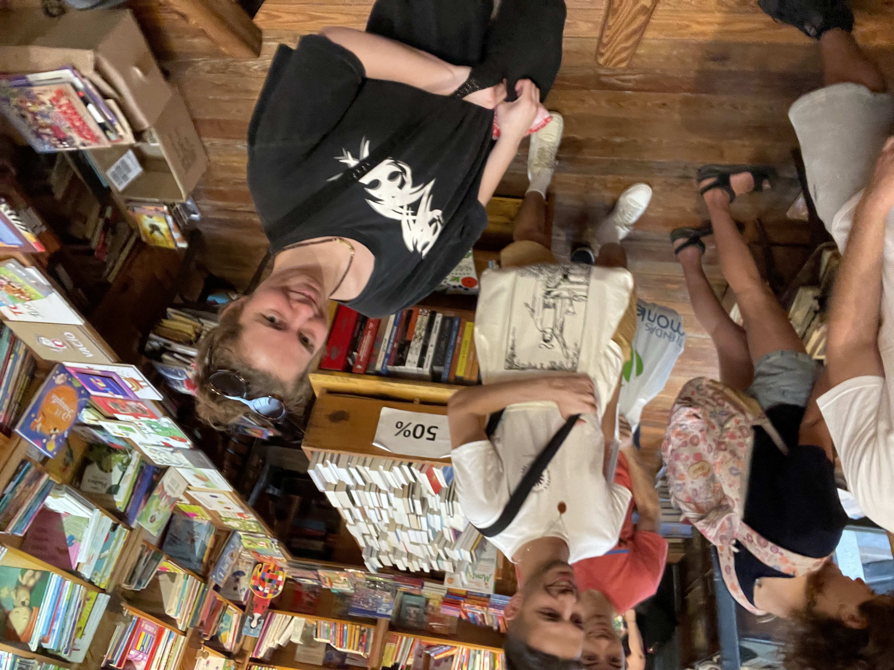
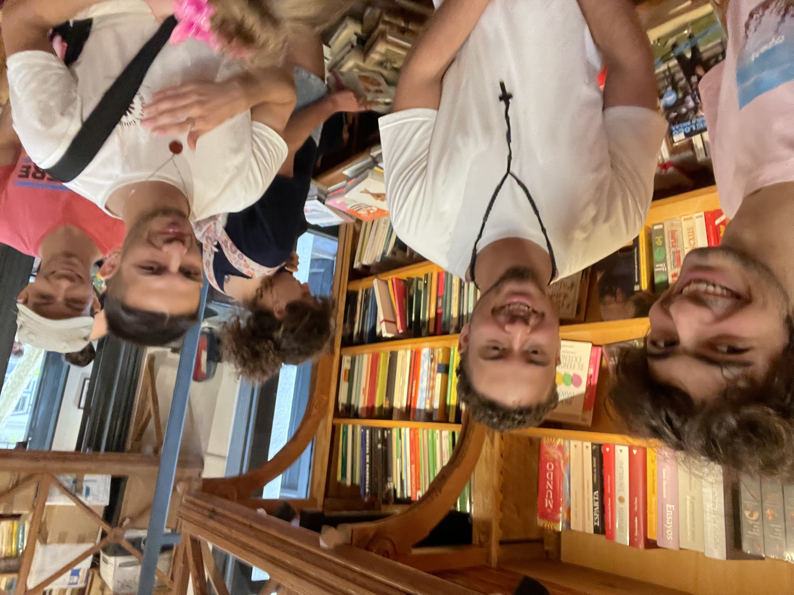
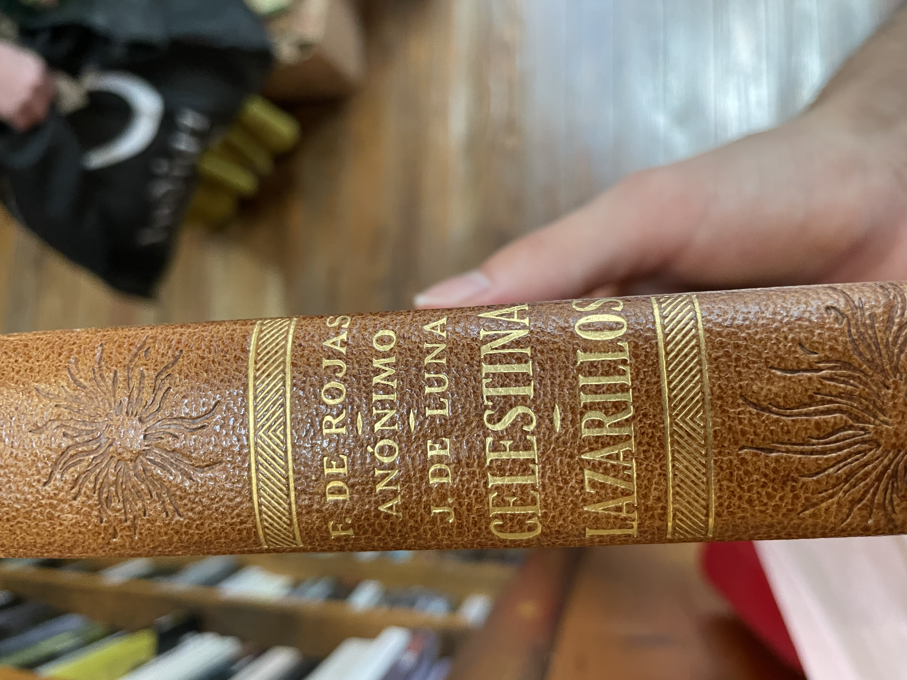
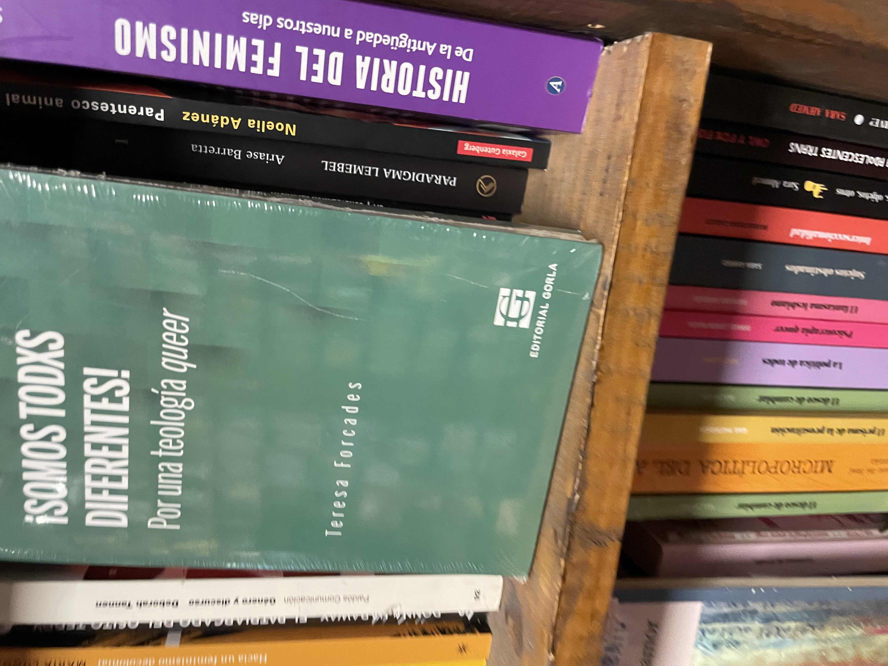
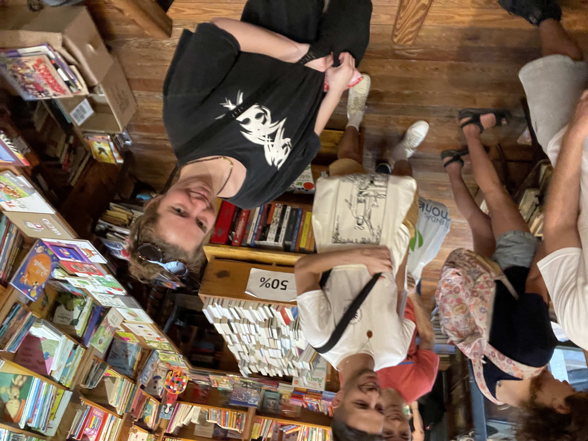
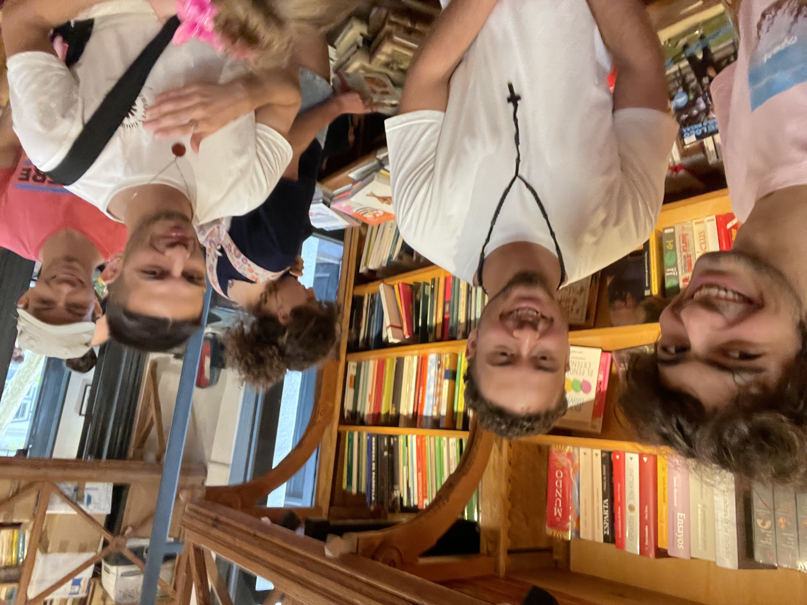
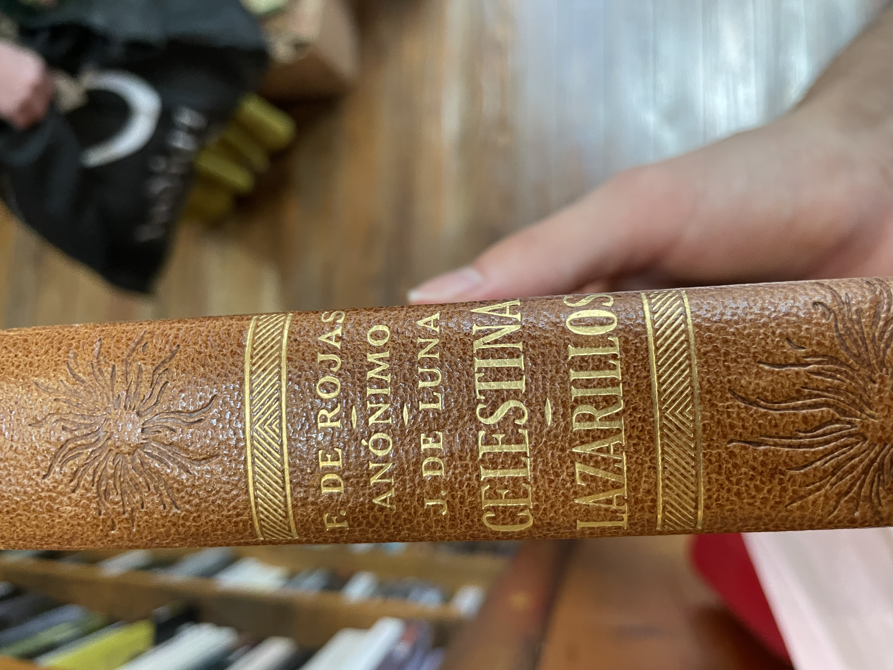
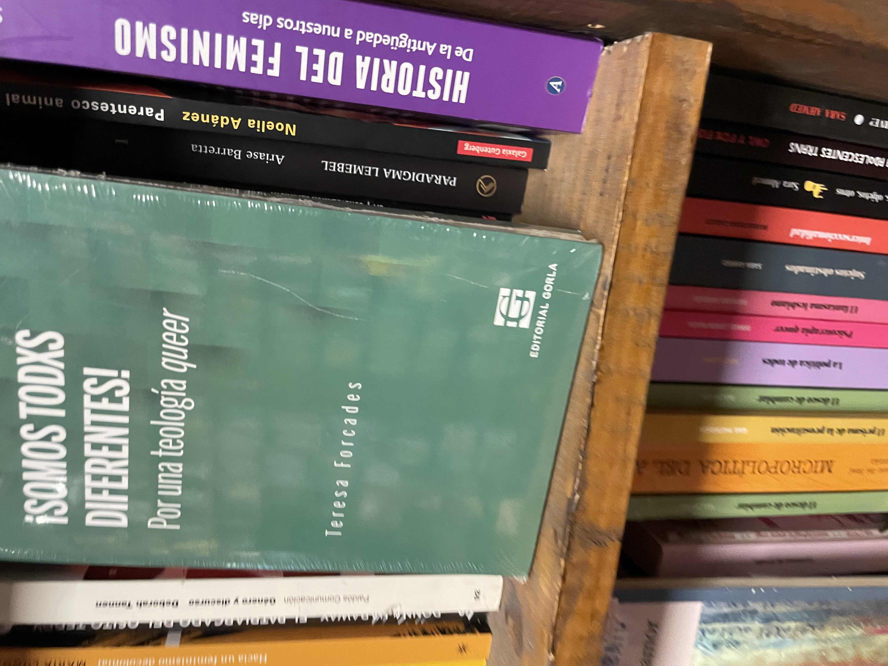

Argentina
I don't know if you read the previous story, my amazing chronicle. I may have done some mistakes or assumptions in the chronicle, but overall I feel like it was quite accurate. But I am done trying to be accurate, I am going to write a story from my own subjective perspective, now starts my diary.
A lot has happened ever since the end of my first chronicle and my "diary" that I am doing right now. Alex is now in canada, Milla works at a graveyard, Sebs has a girlfriend, me and Sofe went to french classes, and many more things that I am not going to go over.
Date:09/03/2025
Climate:Normal
Location:Uruguay->Argentina
Title:Rouph and Tumble
A lot of things have happened since the end of the chronicle, i decided to pursue farmacy or some sort of chemistry. I kind of wanted to do music. Unfortunately my school didn't really teach me anything about music, so I thought it was a better idea to do something that I am more proficient on, chemistry. Also I have less chances of dying of starvation.
The plan is simple, I applied to several universities in the neatherlands, and if I get accepted to any of them I will go there. But if I don't, I will stay studying in Argentina. Argentina is like my safe zone, if all fails the worst case scenario is I become a pharmacist at the Hospital Italiano de Buenos Aires, which is not bad at all. The only bad thing is that in order to keep my safe zone. I have to attend to the university in Argentine tomorrow.
It's called the Universidad del Hospital Italiano de Buenos Aires(UHIBA) but i'm just going to call it the Italian Hospital. Anyways, in order to actually have a chance at getting accepted in the neatherlands I have to take a math test called the OMPT-B (Online Math Placement Test Level B) in order to remedy my defficiency in math that I aquired due to my decision to take IB Math Applications and Interpretations SL. During the timeskip I studied, I took the test, and I failed, then i studied some more with Mr Zarsky, and I really hope I am ready and I can get a good score on this test.
Today I moved from Uruguay to Argentina, there is a bunch of stuff I have to do like getting a bus card, getting new shoes because I forgot them in Uruguay, getting proof of vaccination for the Italian Hospital University, and much more while also having to study for the Math test which I have to take this week or else my parents won't let me go to Uruguay this weekend to visit Milla(who is in uruguay for some reason).
i failed to do many things today, I was toot tired because I couldn't sleep last night at all and also travelling is exhausting. There is a lot to do and I don't even know if it's possible for me to do it. But I believe in myself, I got this. Also I believe it's zarsky's birthday.
Date:10/03/2025
Climate:Hot
Location:My Apartment-Italian Hospital Area-Shopping-The house of my grandmother
Title:Hit the ground falling
I didn't sleep well last night. Today I woke up tired so I drank some coffee in Le Pain Quotidienn with my mother. I also bought a muffin and then we took an Uber to the Italian Hospital. Once I got there, I went to class and everyone was sat down already, I was the only one who had arrived late. It's quite characteristic of me so I don't mind.
I sit down on one of the few empty seats left, next to this guys called Ramiro and at the back of this other guy called Lorenzo. The teacher talks about his teaching methods and university life for like an hour and then he starts teaching stuff I already know. Except resolucion and sensibilidad, I don't think i've learned those before but they don't seem that hard to understand. Ramiro helped me a little bit to understand.
Then some lady's come and give everyone their institution cards. I still haven't taken a picture that I need to take in order to have my institution card so that might be a problem to solve later. After that the ladies just explain what they are here to do, I unfortunately don't remember any of their names.
Then I try to do the empadronamiento but I fail to wait enouph time. So instead I try to go early to the next event. Everyone was too early and we weren't allowed to enter before the specified time so we had to wait a while. Eventually we are let in, and then we wait in a room for a couple of minutes, everything is underground for some reason. But then we enter the auditorium (which is underground for some reason). So they talk a lot, they sing the Argentine National Anthem which I don't know, and the Italian National Anthem which no one knows.
At this point i'm just really tired, I fell asleep through most of the first speaches. But I was awake during a part where they showed that there were a lot of people from the interior of argentina, and 1 person from Chile, Paraguay, and other south american countries but those are the ones that matter. Maybe someone from peru. There were also 9 brazilians and one United Stadian person. However I don't know who any of these people are, I just know that they exist and I might run into them some day.
After that we did some activities where we kind of got into groups and explained why we chose our medicinal carriers and they made us right post its and stuff. It was okay, I was the only pharmacist of my group. After it finished we headed outside. On the way out I decided to ask two of my fellow companions how to do the empadronamiento, I kind of already knew how to do it but it was better to have some help and also I need to make friends. Their names were Pilar and Mica. Pili is from the interior of argentina but I don't remember from where exactly, she has a cat, she took english classes for a while so she probably knows english, and she is overall really nice, she is taking biochemistry meaning she might be in my class.
So i did the empadronamiento and I took the photo and stuff, very cool. I aquired a new friend, pilar, and also a new aquaintance, mica. Before leaving Pilar gave me her phone number.
Then I went to eat something with my mom in a shopping. I also bought several clothes, like a new sweater, new pants, and new shoes. Then I went to my apartment and I immediately slept, I had a dream.
Timo vs The Shapeshifter and Something Strange
There was an award show where Sebs' entire family was invited, including his newly aquired girlfriend. I was there so I sat down with him and we were having fun. We were in this huge building and the host was anouncing the best people on earth, he jokingly anounced Drake, Mr Beast, Donald Trump, and a penguin, before anouncing the actualy best person which was Kendrick Lamar. Kendrick Lamar and Drake where both sat on the same table arguing about music right next to us, it was real funny.
But then some woman approaches me and kisses me?! without my consent. And I am proper pissed but she ran away. So I go to another place with sebs mocking me for being kissed, I am in a window and in the distant shore, I see a strange fish crawl out of the ocean. And then I look away to Sebs to discuss the random situation and I look back and I see the fish entering this building.
I have a bad feeling so me and sebs escape the building by jumping off the window and later heading to a cabin in the woods. We wait there for a while, eating baked beans in a can. But then from a nearby pond, something strange crawls out. Sebs deducts that this thing is chasing me and I should try going really far, like to an island. So I do that.
I go to this island where I find Ethan and I explain to him the situation. The bartender gives us some clues about an old man that told a similar tale. He died in the 13nth floor of this restaurant that was here in this island for some reason. So we go to the 13 floor and we found a note, a story about a woman and a strange fish that chase a man for all his life until he died, you better not be cursed by them or else.../ I guess I was cursed when I was kissed
This is bad, I look out the window, something strange crawls out of the sea and into the island. It starts going up the stairs and Ethan aquires an idea. This fish is really slow, we can probably make it go all the way up the lighthouse stairs and quickly go down to save us a bunch of time. So we start doing that, the strange fish is like some sort of ugly fish with arms which it uses to drag itself on land. Its following ethan up the stairs and its all going well until I hear a voice and a lady comes, this lady starts taunting me, saying a bunch of stuff, none of it is important until she says "what if it's only pretending to be so slow" the fish suddenly starts moving faster and faster, Ethan trips and the creature catches up to him. I try to help him so I fend off the woman and kick the fish in the face. "I can grab you physically, it can grab you mentally" the woman says as I fight off illusions of the fish trying to attack me. I fall down the stairs and Ethan blew a hole through the wall and we are outside. We get a boat which we use to get the hell out of there but the fish is chasing us really fast in the water.
Ethan loses it by using some of his tnt to jump into the top of a building. I call Sebs because I want to set up a lunch meetup with him so that I can lure the fish and the changing woman and fight them with sebs and ethan. We have lunch at a restaurant, I am seeing one corner of the street and sebs is seeing the other, the only way to get us by surprise is from above, Ethan is hiding in the roof.
Suddenly I see the fish, and the lady comes crashing down in the table. But then time goes back instantly like 6 seconds, I see the lady falling again and then time stops right before she falls. The fish summons water to try to amortiguate the lady's fall, but for some reason this time freeze doesn't work on me. I steal their time device and the fish starts chasing me. I threaten to kill the lady by letting time go but the fish claims tha the doesn't care. I let time goe and the lady dies, the fish is shocked. So then I rewind time. I let the fish save the lady but I kept the time device.
Apparently, this is a duo of mythic entities that like trolling their prey a lot before killing them. They feed off their fear and they also find it really entretaing to play with their food. The penguin from the beginning was the shapeshifter who was planning on killing the host, but then she saw me and thought I was more interesting. So it turned into the woman that kissed me. Anyways I beat them, and hopefully they'll never bother me again.
Then I woke up and I went to my grandma's to eat, but I left when my grandfather came. Then my sister called, and I also told sebs about my awesome dream but he didn't really reply. This day was cool but quite unproductive, I hope to sleep better now.
I also talked to Dani, he basically told me that I have a low math level and that I should be productive before going to sleep, thanks Dani.
Date:11/03/2025
Climate:Normal
Location:My Apartment - Italian Hospital
Title:The Mock Exam (Bad Ending)
I arrived an hour early to class by mistake, but I wasn't the only one to make this mistake. mica too and others aswell. mica and I went to buy something to eat. We talked about where we live and other stuff, she is much less talkative than Pili which is a shame cause im not that good at talking.
After a while people started coming and the class finally started. I learned nothing, except from new types of concentration units for solutions. I spent most of the time talking to this knowledgable guy called Fernando. He knew that there were more states of matter than the usual 3. And he knows about the unit of temperture measurement rankine. Only smart people tend to know this much about stuff, so I can tell he is quite smart.
He also plays the guitar. He also knows how to use matrices and stuff like that. I also did a lot of math integration problems. I unfortunately didn't talk to mica or Pili that much today. After school i studied math and then I went back to my apartment.
I studied math and then I did the mock exam, I did worse than I expected, better than last time but worse than what I expected. After that I saw a notification that Milla visited Plaza Cafe and fetus? . fetus? is a location with a parking lot, i've never been there but it's like the place where most of the table tube gang once went to skate I think. I think i'll surely be able to visit Milla next weekend.
Overall the day was quite productive but I am afraid I won't be able to sleep well.
Date:12/03/2025
Climate:Colder than usual
Location:My Apartment
Title:Falling Fast
I woke up terrible and I went to class, it turns out that there wasn't math class today which is a shame because I just came all the way here when I could've just slept. So I took a cabify back home. Then I tried to sleep but I couldn't, this happened for like an hour until I went to Le Pain Quotidienn and I ate a bannana muffin, I love those muffins. Then my mother gave me the SUBE card that allows me to take buses. So I took a bus to the Italian Hospital with my mom.
Once I reached the university I entered to biophysics class and I sat next to pili. The professor was explaining how the class is going to work, he did that for a long time. Eventually he got to the actual content, uncertainty and error. I knew everythign he taught which was basically how to calculate error. Except the very last thing he taught, it was a new way to calculate error without using relative error. I spent most of the class trying to do learn how to use addition formulas in trigonometric functions.
At the end of the class Pili and I walked to a bus station. We talked about the last thing that the teacher taught and how pili and I didn't fully understand it. We talked about videogames too, she plays open world games like minecraft and subnautica. I also play minecraft but I also play ultrakill which is not open world but its really cool and it also has some good lore. We also talked about art and art festivals. Eventually we get to the bus station which got its sign removed so it was hard to find, but an old lady confirmed that the spot with absolutely nothing on it to indicate that there was a bus station, was indeed a bus station.
So I took a bus to my grandma's to eat a sandwich, then mom and I went to buy a lab coat, a sharpie, and notebooks. The notebooks had a discount, I got 4 notebooks for 10 dollars. I also bought a spicy alfajor which was one of the top 10 worst decisions of my life. I gave the alfajor to a homeless person, probably killing him.
Then i went back home to sleep. Then I did some math, trigonometry, I got pretty good. Then I sent an email to Mr Zarsky and also to Maastricht to re-schedule an interview. I started walking towards my grandmother's house in order to eat dinner, I was eating some crisps. But while I was wating for my mom to open the door to the building that contains my grandmother's apartment, a homeless man started searching in the trash. I decided to give him my crisps and it felt good. Almost as good as calling them crisps to intentionally annoy any american.
I eat and quickly sleep to get enouph energy for tomorrow, but not before I send a final email to Zarsky and scheduling my admission interview for Maastricht.
Date:13/03/2025
Climate:Coldern than usual
Location:My apartment - Italian Hospital - Some french restaurant
Title:The Laboratory Day
Today I woke up bad, I didn't sleep that good. So I spent 45 minutes trying to wake up completely, and I took the bus at 7.45 which made me arrive 20 minutes late to class. Pili looked at me funny because I was later. My classmates were doing an activity with ions, and the teacher guiding the activity was a student from a higher grade. The activity that everyone was doing was a group activity, so I scanned the class for potential teammates, my friend Pili was already in a group of 3, however there was this dude way in the back that seemes like a cool guy, so I sat with him and we did the activity together. His name is and we lauphed at how complex it seemed and how nomenclature in english was always the other way around in spanish. For example Hidrochloric Acid mentions hydrogen first, chlorine second, and acid last, meanwhile in spanish its Acido Chlorhidrico which mentions acid first, chlorine second, and hydrogen last. English makes more sense because you always mention the cation first in the chemical formula, like in NaCl being sodium Chloride instead of Cloruro de Sodio.
Then the teacher mentions something about HCLO which I didn't understand, it turns out that it was just a bad example she had used to make the students understand a concept. Then I practiced a little bit of math, but I was too tired so I always got every problem wrong. Eventually, kids from the other class came, and break started. I went to get some facturas at a nearby panaderia and I came back. We corrected some questions about concentration unit conversions. While this was happening I did some math and the guy next to me played chess.com
After that we had a second break where Pili and I talked about random stuff. Then we all put on our epic lab coats which I bought yesterday and we went to the lab. In the lab we learned about the differnt types of equipment, I learned all of the equipment names in spanish. Everyone learned how to use a pipette and a scale, i felt good because I already knew so I could help Pili and Ian do it correctly. We weighed 2.5 grams of salt in the entire class and we also learned how to create a tiny envelope in which to encase the salt, or whatever drug.
I also learned about how to calculate what mass I should use if I know that a salt i hydrated, something that I didn't know before. Additionally I learnt how to fold a piece of paper in a way where I can safely contain any powder. Pili also showed me how to swtich my Uruguayan phone number to my Argentinian phone number in whatsapp.
After that, I went to the bus station and went home. I did some math, but I was getting all the answers wrong because I was tired. I decided to call Sebs. We had fun talking to each other, he had a great time with his girlfriend in Uruguay, and he has been working hard on his job, he works for my dad to import stuff to England. He is also working on a side project to grow and sell spice plants. He is also going to a dance tomorrow. And finally he is also going to a party tomorrow with sofe, one that I was invited to before sofe knew that I was leaving to Argentina. Sebs and I also talked about mushrooms and how Ethan had done weed and shrooms. Sebs also confirmed a theory I had that Ethan used to like Sofe, Sebs lauphed at me because he said it was obvious. We also talked about shoes and how Ethan is one of them. More interestingly, Sebs has apparently not hanged out with Milla for some reason, even thought they are both in Uruguay and both in montevideo, I guess sebs hates fun. We theorised about an ultimate corssover episode, hanging out with Sofe and Milla, it could either be a nightmare or the best thing ever.
Eventually my mother invited me to a cafe and I decided to go. I ate a Chocolate Ingot and some Chocolate Milk. My mother explained to me that sugar is addictive and going one day without sugar was challenging, I accepted the challenge. Also I decided to keep my Uruguayan phone number, so I might have to tell mili to use my uruguayan number.
Then I was going back home to my appartment when I got an unexpected phone call from none other than Mono himself. He told me a little bit about his life, I updated him on the fact that I moved to Argentina and I started university and all. I also told him that I did shrooms with Bruno and Ethan and we tried to play minecraft. This happened the day before I moved to Argentina.
After that, I got an unexpected call from one of my favourite people. Mono.
Mono and I tend to understand things better when we do it together, and since my journey in math was not advancing because of my tiredness, I decided to help mono out. We had a lot of fun and we learned about a new equation that relates pressure to the density of a gas which was really epic. We also figured out how to relate temperture to pressure which was a nightmarish looking equation. Overall we both gained a good understanding about enthalpy, intermolecular forces, and math. I also updated him on what is going on in my life.
Math in chemistry
Then I ate at my grandma's house, I ate some good spinach tarta.
Date:14/03/2025
Climate:Normal
Location:My Apartment - Italian hospital
Title:Mr Lopez's Birthday
I woke up terribly, without an alarm, I don't even know how I woke up, but I did it. And I took the bus. Everything was going pretty well until I decided to get off at the wrong spot. So I had to walk a little bit and take another bus, causing me to be 30 minutes late to my first Cellular Biology class. Pili looks at me funny realising that this is not the first or the last time I am going to be late to class.
So I sit next to this person that I've never met, and I don't know her name because I was too tired to hold a conversation. The teacher gives us ricino seeds and he proceeds to explain how ricino has several medical uses. He also tells us that if we eat the seed we will die from a poison, and he explains how this poison was used in a pressure gun to kill someone, it was also used to try to kill obama. The lesson of the story is that stuff can be used to aid or to hurt, and this career will help me learn how to use stuff to aid.
Then we make groups, I join a group with Pili and other girls. They gave each group two germinated poroto seeds in a cup. Then they told us that we should ask deep questions about it. Here are the incredibly deep biological questions we had
- What is inside the seed
- How does it create a micro ecosystem
- How does it interact with other life forms
- Why is it green and could it be another colour
After that, all the groups shared their questions, Fernando was by far the one that had the most quantity and quality of questions. He is a knowledgable man and he likes showing that off by doing things such as calling DNA deoxyribose nucleic acid(or whatever the spanish equivalent of that is). Then we try to answer the questions even though we were not instructed to do so. Later comes a 10 minute break. My group was composed of Pili, me, Rosario, Milagros, and someone else. This group followed Pili in her quest to get some coffee from the several coffee machines scattered around the floor of the hospital. However none of them worked to Pili's misfortune, so everyone goes back to the class. I then go to a cafe alone where I buy 2 empanadas, they where quite pricey but I was really hungry.
When I came back the teacher instructed us to try to answer the questions we had. We had already done this so we jusst sat there trying not to fall asleep for 30 minutes. The reason we couldn't just sleep in class was because we were in the front seats since that's Pili's prefered sitting spot. We all shares some answeres the answers that we induced without using phones.
Then something really unfortunate happens. The docentes come to give a presentation about lab reports and how to do them. They call lab reports "trabajos practicos" and they basically go through all the details of how to make a lab report, something I have already done 20 times. Safe to say that I was having a lot of trouble not falling asleep. I wasn't the only one though. Towards the end of the presentation, I noticed they made a mistake with the emails, I pointed it out which hopefully gave the appearence that I was paying attention throughout the entire presentation. Then they anounce that there are still 3 hours left of class and I kinda just wanted to end it all right then and there.
We had a small break that saved us. Pili and I went outside and we saw mica waiting for the elevator. We chatted about how that lesson just now was really bad and we would never want to go through it again. mica, Pili, Rosario, and I went to the cafe that I bought empanadas from. The cafe has a sign that says "cafe" which mica found funny since she thought that was the cafe's name. The cafe's actual name was manana and it has a guy that has some kind of burn mark on his eye, he looks really similar to zuko from avatar: the last airbender.
We all bought coffee in order to survive the following hours. After going back to class, the teacher taught some chemistry, which I am very proficient in so I just decided to do some math. I also answered some questions every once in a while to not raise suspicion that I wasn't paying attention. A noteworthy thing is that zuko and the teacher both told me to speak more loudly so I should probably do that more.
Then we all started going home. I usually stayed studying in the flex space equivalent that this hospital has. They call flex spaces "zooms" here, so i'll call them that. However this time I just went straight to the bus stop because I was really tired. A group of students was walking the same direction, they were talking something about bullying. We walked for a while and apparently mica and I actually live really close to each other in recoleta. We talked about how hard it was to stay awake during class today.
Once I got home, I did some math. I also texted Alex asking him if my sister could talk to him because she is considering taking IB Math AA HL which is a really touph class, alex said that there was no problem. I was getting all the math problems wrong because I was so tired. So I try to get on a call with ethan so he could teach me how to download ableton. While I waited 1.5 hours for Ethan to get ready, I ordered a shwarma. I tried downloading ableton by follwoing Ethan's steps but it took too long, so we talked about how are lives are going. I told Ethan about the friends i've made and Ethan did the same, we are both really advanced for our classes. Then we decided to play super smash flash 2. It was pretty fun, I played mostly as the dark mage and Ethan played mostly as goku, I also ate the shwarma. And then at 17 I had a class with Mr Zarsky.
Zarsky gave me some useful information about how to solve several forms of quadratic equations. And in cases where the equations weren't quadratic, he taught me ways of making those equations quadratic in ways where I only needed to find the real roots. We also briefly went through properties of logarithms.
After that I went to say bye to my grandma and also to get my moms charger from her house. I came back to the appartment. Ethan and I played some more super smash flash 2 until he has to go. Then I practiced playing the guitar for a bit, I finished my shwarma, I texted milla, and I went to sleep.
Date:15/03/2025
Climate:Normal
Location:Argentina->Uruguay
Title:Return
Today I woke up early, and I returned to Uruguay for this weekend in order to visit Milla. Everything went fine except I forgot a mastercard in my apartment. When getting home my sister informed me about her math situation. Basically my sister is considering taking IB Math HL but she isn't sure because Orrico described it in a very scary way. My sister asked Alex about Math HL and Alex says that she should only take it if she likes math. My sister also wants to ask him how he balanced volleyball and math since orrico told everyone that if they are taking math HL they would probably have to quit some after school activities.
Also my mother informed me that apparently Ms Coyle and Mr Amaral called my parents multiple times to recommend that I shouldn't do the IB because it was too hard and too structured and I was going to fail. So it feels extra good to have passed the IB now. Sebs also told me about how he went dancing with Sofe, Bruno, and Sofe's british friend from her university, her name is Marina and Sebs decribed her as "Eitokuesque".
After that, Sebs came. We tried to reserve a court for paddel but the next available time was at 19:30. So sebs started playing minecraft on my laptop while I played my guitar. Sebs was playing on a server that was created during the timeskip. When the server was created Sebas played in my laptop with Ethan and created a base with a farm while I returned a manual car to a car rental. After that, I decided to play in this world aswell and I went really far. Now today Sebas is going to try to get back to the base
Sebas finding the most useless ore in minecraft
After that, we went to eat pizza while talking about how shoes control a lot of the world and what shoes believe in. Timo also came up with a new way to call jews(shoes). We also talked about all the religions and we concluded that the best religion is christianity. In my opinion specifically the christianity represented by Dante's Inferno.
After that we went to play paddel and Sebs suffered for an hour because nothing he was doing was working. He was really struggling. So we struggled for like 2.5 hours until we decided to go back. We went through an alternative route where I showed Sebs the first house that I inhabited in Uruguay as a child and the place where I took my first music class. It's really strange how everything is so close to everything else, as a kid everything just seems bigger and farther away. Then I took sebs home.
I talked to Milla and Sebs, tomorrow we are meeting up at tristan narvaja at 10.00-10.30
Date:16/03/2025
Climate:Normal
Location: My house - Tristan Narvaja - Rudy
Title:
Milla Day
Today I woke up quite tired for some reason, and I drove towards the Tristan Narvaja Fair to meet up with Milla. It's a fair where people sell random things. And there is no official price so you can barter the price sometimes. When I first arrived I called Sebs, and he came to me. He told me that he was leaving towards his home since he couldn't find milla. He tried calling her and texting her but she only replied with emoji's. So I called her and she told me that she would come to us. Sebs and I walked for a short while and I started writing down things I might want to buy in the future. Then we stopped to check on Milla's progress towards us. The Table Tube Gang has a life360 group, basically we can all check each others locations, except Sebs, he deleted that app. So we checked life260 and milla was surrounding us, she was somewhere amongst the people. It turns out she was taking photos of us.


Milla secretely taking pictures of us
We walked there for a while. We went to a bookstore where we saw a lot of interesting books such as a book about flies, a book about batllismo, and the new testament(mini version). Sebs bought a book about punta del este. Then we walked further into the fair but nothing peaked our interests so we made our way back.
 







Library Adventures (Milla tried to dodge selfie time and she was partially succesful)
At this point I had written a bunch of things that I might want to buy in my phone. So I went to a nailcutter that I thought was cool. But it turns out it was low quality so I didn't want it. Then there was this cool sweater that was made of wool. The man was willing to sell it to me for 1500, so I was about to buy it until I tried it on and I found it too itchy.
Then Milla left on her search for a good uruguayan sticker. Sebs was really tired at this point so we grabbed some chairs from a chair-stack of a restaurant and we sat down while Sebas drank a bear. I talked to Sebas about how I wanted to buy at least one thing from this place since I won't be coming back to it any time soon. So we explored a bit until I settled for a cool yellow shirt that had my favourite art piece from Torres Garcia called "La America Invertida".
Fun Fact:The America Invertida art-piece represents latin-america as the center of the world and it being on top of the united states instead of the other way around. It's torres garcia's way to remind us that everything is relative and south or north are just 2 orientations that we made up, from a different perspective we could actually be on the top. This art-piece was suggested to be used during an international art festival t-shirts in a school but it was rejected because it might have been offensive towards Americans.
Anyways, we found milla a little later whom has succesfully aquired a sticker. We planned to go to eat something after the fair but apparently Milla had to leave because people were wating for her... in piriapolis. Before she left we asked Milla if we should have lunch at a really good Korean restaurant called Araryio or a really good burger place called Rudy. Milla suggested the korean place before leaving, we aren't going to see her again in a long time.
So we started heading to Rudy, and Sebs made a comment on how elusive Milla was. Sebs also informed me that he used to be a model as a kid and his parents put the money that he made as a model into a savings account and now he has 4 million dollars. I don't know how much of that is true but yeah. He plans make even more money out of this money, he is interested in entering the real estate buisness in Uruguay. He is also interested in buying a house soon where he can stay and live with his girlfriend. Pretty epic stuff.
Eventually we get to Rudy. I paid for Sebs burgers because he paid for my pizza yesterday. They also got my order wrong so they gifted me a salchichon de chocolate.With Sebs we talked about how its funny that we usually only talk about the same people. Ethan, Dani, Sofe, and Bruno. Sebs also likes to talk about shoes and her girlfriend, and I like to talk about trump and how we should reset the world.
Sebs eventually leaves via uber and I go to the bus station. This was a tiring day, I fell asleep in the bus station, when I woke up I saw the 109 bus in another station, meaning that I was in the wrong station. So I ran towards it but it was too late. I had to wait 26 minutes for the next bus. Eventually I did get home. Fede asked how was it, and we all told him what we bought and stuff. I also asked him about the meaning behind Torres Garcia's America Invertida. Fede also informed me that the president Argentina sucks a lot. Very unfortunate. Tomorrow I have online class and i'm also leaving to Argentina once again.
I forgot my salchichon at the bus station :(
Date:17/03/2025
Climate:Hot
Location:Uruguay
Title:First Online Classes
Today I woke up at 10, and raelly tired. I was supposed to wake up at 8 because I had online classes of Biophysics. But for now its only physics and we are learning about errors. So it's safe to say I didn't really miss anything important.
Same thing can be said for math. During Math I made some cool advancements on my website. I implemented some JavaScript and I also made it more accesible through the phone. I also texted the Sunday groupchat. It was a groupchat formed during the timeskip. It's a group of Sofe, Sebs, and I. So I invited everyon in the sunday groupchat to go to crepes like around 14:15. But Sebs and Sofe found that time too early so it was changed to 14:30.
Sofe arrived really well, and I arrived a good 20 minutes late unfortunately. Eventually i did get there and I got a crepe. Crepes has a card that you can get which gives you a free crepe every ten crepes. This was my 9nth crepe which means that the next time I go to crepes I will get an extra free crepe.
Sofe asked if she could have the extra crepe coupon. I thought about it but then I realised that it would be really epic to come back and be able to eat and extra crepe for free so i had to say no. Sofe told me about how she started university and met this new friend called Marina. She is from britain and she does dancing. Marina had gone with sofe, Sebs, and Bruno to a music thing and Sebs said that she was chill.
Then I updated Sofe on all my life, it was pretty cool. I told her about how we went to Tristan Narvaja yesterday and I got a cool yellow shirt. She said she liked that shirt and it had her favourite torres garcia artwork there(it's my favourite too!!) Then we saw on our phone that Sebs wasn't coming which was really sad. Our crepes came and we devoured them because both of us hadn't eaten yet. Then I suggested going to Rudy since I wanted to eat a salchichon de chocolate to compensate for the fact that I lost mine yesterday.
On the way there we talked about tiktok/reel news. TikTok news could either be true or false, no one knows with so much misinformation flowing around these days
- La Roche Posay is cancer (Sofe uses La Roche Posay a lot)
- Fried things are worse than ciggarettes(Sofe was going to Rudy to get french fries)
- Milei is a terrible person(That one isn't really up for debate anymore)
On our way to Rudy Sofe commented to me that the waitress from Bar Arocena had a massive ass. I responded saying I hadn't noticed and she said that one of the reasons she wears sunglasses is so that he can look at people without others knowing. "So that you can look at their asses" I said. Sofe then says she is a very observative person.
We eventually get to Rudy, Sofe has been her several times, but she remarks how this is the first time she has been here. She later clarifies that it's the first time she has been here under such awesome conditions(weather, sunlight, stuff like that). So we order a salchichon of choclate and Sofe orders french fries.
I tell her about the paddel incident with Sebs the other day. Me and Sebs tried playing paddel for 2 hours which made me tired for the next day where we walked around tristan narvaja for a while. This tiredness caused me to fall asleep in the bus station, miss a bus, rush for the next bus, and forget the salchichon that I was gifted from Rudy. And that is why I am ordering one right now.
Sofe has a very shocked expression in her face, I am guessing she was surprised I didn't get robbed. She then mentions that Lara asked to see some of her short films but Sofe doesn't want her to see them. I ask why, and this leads Sofe to go on a whole tangent about Lara being evil. This is quite curious because I've never heard anything bad about Lara. Her constantly cheery and over-expressive attitude might come off as fake but that's just about it when it comes to things that could be considered bad about Lara. However Sofe has offered me the first "evil" perspective of Lara.
If you are actually curious you can read by hovering over this text
So it all started like 5 years ago when Sofe dated Lara's boyfreind, Agustin. I am using the word "dated" very generously because they barely kissed twice. But then Agus cheated on her and they never saw each other again.
It turns out that Agus never forgot about Sofe, and has basically been obsessing over her?? That part is unclear to me. According to Sofe, Lara told her that Agus talked about her when he first met Lara. Sofe found that strange since it's been 5 years. But for some reason now, Lara wanted to invite Sofe to be with Agus which is kind of insane?!?
Sofe obviously rejected this invitation several times since it would've been very awkward. And one day Lara jabbed at Sofe about how Agus cheated on her in the gym. Juanma and Ale heard that and inquired about the situation. Sofe instigated Lara to repeat what she had just said, knowing that she wouldn't repeat it infront of the others.
So yeah, my best guess, if any of that is true, is that Lara was trying to get rid of any attraction that Agus had towards her by inviting Sofe to be with Agus and having them discuss their feelings???? It completely beats me. Also apparently Sofe was really awkward at my birthday party because Agus was there so Sofe if you reading this im sorry.
So anyways Sofe was stranged out by all of that and decided to not share her films with Lara. We checked the time and we realised that I totally had to leave like 30 minutes ago. We both walk towards my car.
I thank sofe for giving me this new perspective. I tell her that I love hearing different perspectives of stuff, specially people. Because I only have one perspective of everyone, and that perspective tends to be good since I think I am a very forgiving, always-looking-at-the-positives kind of person. So hearing about people talk about the negative qualities of others gives me a lot of insight, and its just so interesting. Sometimes it's like they are descrbing a completely different person to the one I know.
We get to my car, I'm taking Sofe home, and since we are on the topic, Sofe talks about Fede. Now if you have read my epic chronicle you know how annoyed I am at the fact that Fede and Sofe hate each other. They both share so many ideologies and if you knew both of them you would think that they would get along really well. But the contrary is true. They get along terrible, so bad, its actually insane. And I've tried to make ammends between them, I was like the peace negotiator between them during an art festival but I only made it worse. And every interaction they have ever had only made it worse which is a shame because they are both people that I respect a lot.
You might be wondering, what is the origin of this hate. Nobody knows, it's a complete mystery. But Sofe brings this up because she recently found a note that pertains to this. Allegedly, during the first week of school, Fede called Sofe a whore. Sofe retaliated by giving Fede a very insultive note essentially calling him fat. Sofe admits this wasn't her proudest moment but she was just mad that Fede called her a whore barely having known her. Sofe theorizes that perhaps this was the start of their hate-hate relationship.
And this a staisfying-enouph conclusion for me
Trying to find out why exactly they hate each other has become a meaningless task, and don't get me started on how immposible it is to have them get along.
But from my years of expertise in the area I think that I do have a theory about who is more responsable for the animosity between the two. It's Fede and there are really no surprises there.
Fede is very selective with his friends and it's very possible that Sofe just rubbed him off the wrong way. Maybe Sofe's efforts to be Fede's friend made her annoying to Fede.
From all the evidence I have gathered from both Fede and Sofe, Sofe is the one that has always given me more concrete and specific answers while Fede's answers have always been subjective. Like "sure I get why you might have been insulted by that" instead of "oh yeah that is indubitably bad".
That could be just Sofe being better at convincing others. But I don't think so because Fede is known for being very selective with friends and having stored feelings for many peoples. I don't get that from Sofe at all, she is really open about how she feels.
Sofe then adds that she had never tried as hard to be friends with anyone as she had with Fede. She went to like a charity event and stuff. Also, she found it weird how Fede wanted to hang out with Angie even though she was clearly homophobic. Fede sometimes says that Sofe is transphobic but Sofe argues that she has trans friends.
Then I leave sofe at her house, but not before she rates my driving. A 5/5 ;)
Then I went home, packed my things, and moved to Argentina
Date:18/03/2025
Climate:Hot
Location:My Apartment, the streets, Daily Coffee
Title:Filler Episode
It's Nata's Birthday today. I said hi to her through instagram which reminded me that I had a hanuka wallpaper in her chat. Very funny.
I woke up with closey eyes, but I couldn't fall asleep. I was realyl sad about missing Math class but then I realised that what I actually missed with Inorganic Chemistry, which is good because I am already quite proficient in chemistry. Tomorrow I have math and it's going to be epic. Talking about Math, I decide to try to do some math myself, but I am actually so tired, I can't concentrate it's so hard. So instead I start cleaning up my room, tyding things up so that it looks better, and now it does.
I also order myself a pokebowl which was pretty nice. Then Pili set 17 as the time to do some biology group work that we needed to do. So I spent sometime trying unsuccesfully to do math.
Then I walked really far to get some plugs for my stuff since I didn't have Argentina plugs. On this walk I also bought a manual shaver and a vegan burrito. I was also trying to buy an electric shave but I ended up buying a normal one.
I get home at 17, just in time for me, Pili, Rosario, Milagros, and someone else to start working for Bio. So we do some work, I find really cool resources from perplecity which we can include in the document.
Then I leave at 18 to have a class with Zarsky, I learned about inductive differentiation, which is not in the syllabus. It's just that Zarsky has such a good way of explaining things that it makes me want to learn more instead of practice what I already know.
Then Milla sends a message through the table tube gang groupchat asking for recommendations of restaurants in Punta Del Este. Fede googles some restaurants and Milla tells him that she can obviously google them if she wanted to but she wanted to know if anyone had gone to a specificly good resaturant. I suggested Rex which is a burger place that is really good. Milla wanted stake so she probably didn't go there.
Then I went to have dinner at daily coffee. I ordered some spaghetti and then a man came to talk to me. He asked me why I looked so thoughtful and I just said I was tired. Then he lectured me about how being a nice person is something that is really tiring some times and that is why not everyone is a good person. He also taught me a new phrase "cada dia tiene su afan". Then he asked if I wanted to buy socks. To his surprise I actually didn't have socks because I forgot them all in Uruguay so I bought a pair. And that's the last interesting thing that happened.
+ 1 Sock Pair
Date:19/03/2025
Climate:Hot
Location:My Apartment
Title:Unsure about everything at this point
I wake up tired today. I couldn't really sleep well for some reason I don't know why my body just doesn't want to sleep at night it's so retarded. I drink a concentration pill anyways and I make my way to the bus. I ask an AI doctor what is wrong with me and it gives me some probable causes. The most likely cause is stress.
So once I arrive to the class, there is no one. I ask around but no one seems to know anything so i text pili. It turns out that Math actually starts at 9:14, not 8, because Math can never actually start at the time it's supposed to. I do some math, I get some empanadas.
People start arriving slowly. Fernando sits next to me and we talked about a bunch of stuff while the teachers talked for what felt like an eternity. Fernando was helping me with certain syntax that is used in spanish math. He also kinda mocked me for speaking a lot of spanglish which is fair.
I also meet Martina and Nacho and us 4 start drinking Mate. This happened for quite a while. We talked about stuff a lot of stuff. One of the things we talked about is how Martina is also living alone for the first time. Eventually Biophysics came, but it wasn't any different.
I went home, I didn't see Mica on the bus, maybe cause she left much quicker than me, or maybe cause she took another bus. Once I arrived home I did a lot of math, I also gave my grandma some alfajores, a mate cup, and some pants to wash. It was nice seeing her. Then I went to eat some wok at daily coffee, it was delicious.
But on the way back my mother informed me that i had missed the Maastricht interview that was yesterday and that made me so sad. It's so hard to keep track of so many things, specially when I can't sleep because of some stupid reason. I don't feel like I'm getting into Maastricht now. I gotta try my hardest for AUC and Groningen, I believeeeee.
I actually went to sleep at 21:00 but I couldn't fall asleep in the next 3 hours so I started doing math annnnnd
Date:20/03/2025
Climate:Normal
Location:My Apartment - Italian Hospital
Title:Diluted
I did math till 4 am where I fell asleep, and I woke up at 10, debating weather to show up to class or not. I then went to Le Pain Quotidienn and I got a Hot Chocolate and a Cacao and Berries Muffin. I texted Pili and they said that they were investigating how to dilute things. I decided to go because it would be fun to hang out with people.
I said hi to Fernando and Martina and I met Juan. They asked me why I came just now and I said that it was because I decided to stare at the ceiling for most of the night instead of sleeping(except I didn't "decide" to do that). I entered the class and then I went to the chemistry lab where Pili asked me the same thing, so I answered the same thing. Pili says that she often drinks melatonin, otherwise it's really hard for ehr to fall aslee.
In the class we dilute some salt into some water. In the last lab, we weighed some salt using a scale and then we encased the salt in a paper envelope. The teacher(Ms Suseya) did my envelope because apparently I had done it wrong. However she also did it wrong because some salt fell out of my envelope, and also Pili's envelope. So we had to quickly re-weight the salt in order to make some saline solution. After that We diluted a solution of copper. I took some extra time because I wanted to be really precise. I was the only one in the class mixing copper with water at one point. But then I finally finished.
Later that day, I ate at daily coffee and my mom informed me that I missed
Date:21/03/2025
Climate:Hot
Location:My Apartment - Italian Hospital
Title:Back to Home
So today i'm going back to Uruguay, but first I have biology class. I didn't pay attention in biology at all. I just did stuff in my computer for most of the class.
Then we had a break where I went to buy some cool orange juice. Martina, Juan, and Fernando where there. Fernando and Juan were waiting for Martina who was buying a coffee. While Fernando explained where they were to one of his friends, he called Martina "la lesbiana", I don't know if that was a joke or she is actually lesbian. Then Fernando decides to also buy a coffee, the rest of the group hesitantly abandons him because they don't want to be that late to class.
So we all arrive a little bit late to class, and Fernando arrives a little bit later. The teacher explained some stuff that I tried to pay attention to but I failed.I do remember that he went through a lab that me, pili, rosario, and others created and it was the one with the most amount of information so that's cool. Them the docentes came to talk and I actually fell asleep here.
Then we went to the lab in order to look at blood and bacteria through a microscope. We were all seperated into our groups that we formed last biology class. My Biology group is Pili, Rosario, Milagros, and someone else. The lab was pretty cool, I am pretty sure we need to write an entire lab about it which I am not really excited to do. After that the docentes told us that now we have to go to a second lab where he will show us something.
I had to leave early because I had a bus to take, and so i did that. Pili told me that Miguel showed us something about optical illusions, it sounds cool but honestly i'm too tired to care about anything anymore.
I take the boat back to Uruguay, I didn't study any math today :( Through the speakers, they anounce that cars can't leave or enter the boat all at once because of some technical problems
Date:22/03/2025
Climate:Normal
Location:Chinese Store Wantan
Title:Chinese Episode Part 1
I'm just going to skip to the interesting part. At 19:30 I met up with Sebs, only with sebs since Ethan and Sofe couldn't make it. I asked them both seperately because they don't really get along that well. This is cause Ethan supports Israel and Sofe supports Palestine. Sebs also made a joke about how Ethan was short for Ethanol
Also Fede chats with an old friend of his from a very long time ago. He was in UAS so he has this amazing picture of what everyone wishes to do in the future.
I said a Doctor, now I'm doing pharmacy, close enouph
I also complained about mosko because I will never lose the chance to do so. Mosko almost failed me, but as a result of that, this interaction occured.
Epic Dani-Sebs interaction. This slightly makes up for Mosko's behaviour
I drove the manual car here, and my sister joined us. Our plan was to go to a Food Fair called D'Gusto, it's a fair where I once talked to Sebs about the salem witch trials and sebs caused them. I also once bought a normal green mug there. So we walked towards a church looking thing in arocena, and I greeted sebs. Then we went to the entrance of the food fair because for some reason it was surrounded by gates.
It turns out this wasn't D'Gusto, it was Burger Show, and an entrance fee needed to be paid. After walking for a while, they both decided to go to "El Escondido" A place that has been only visited once by Constan, Sebs, Fede, and I went to once. It was pretty good so we decided to re-visit it after 4 years. It was closed, unsurprisingly. but there was a nearby chinese restaurant that didn't look half bad.
Eventually, Mateo (my sister Paula's boyfriend') arrived. After I took a while to order, we started playing the games in the table cloths, Sebs was the best at tutifrutti.
Eventually our food arrived, Sebs got some chicken, Pau got some dumplings, I got soup, and mateo got rice. The best food was the one Sebs got, chicken. We talked about weather or not Paula should chose Math HL for IB, and we also talked about teachers like Ms Moskovicks and how she was the worst english teacher in that school. Except Sebs disagrees, he says it was Ms Coyle.
Then we all go to eat ice-cream. On the way there we encountered Luis who quickly catched up with us. Luis was a friend from UAS who joined the school for like about a month and a half. During his time there, he didn't care about academics in the slightest, he did some pretty epic stuff like win a cookie from teacher Erin Mills, ignore Mr Cadenas while he was shouting at him(luis) and sleep in chemistry. He also once invited everyone to a party, but only Fede went. Overall he was the mont nonchalant being of all. He dedicates his life to soccer.
Sebs was baffled by this encounter, he said he would've dressed better if he knew he would meet luis. So we go to the Ice-cream shop and we eat some real nice ice-cream. It's called La Madriguera, it's a cafe that also has an ice-cream shop, and they ahve very interesting flavours,and also black ice-cream cones, because they have carbon or something.
Then everyone goes back home.
Date:23/03/2025
Climate:Rainy
Location:My Parents' house in Uruguay
Title:The Mock Exam (Good Ending)
I woke up and I started studying math, I studied ways of finding higher roots than just two, now I know how to find the roots of some cubic functions. Quite epic. I also studied trigonometry things but I can never seem to memorize the tangent rules. So i went down and my mother told me that studying before a test is a bad idea because you can get nerveous and mess everything up. Maybe she is right. My father went to a glider championship recently so we had to rent a car, a manual car.
Fun fact about me, I love driving manual cars, I find it really fun to use the shift gear and stuff. It's much less boring than automatic. So I go for a walk and then I drive around with the manual car for a while because I just love to do that. I thought about getting mc donalds but i forgot my credit card so I literally did just go around for a drive and come back. Some people might call that a waste of gas.
When I came back I did the test, and I felt much more confident this time, I felt like I knew what I was doing, there was no question I saw that left me paralysed, except every tan identity question but we don't talk about those. There was however questions that would have taken me way too long for me to do. But overall I answered way more questions than last time, and I am really happy about these results. The results are not in yet, in my first official attempt I got at this exam I got a 45%, in my next mock exam I got a 48%, but I have a good feeling about this one, i am guessing higher than 75%, which is the passing grade for the Amsterdam program I want to do.
I go to sleep, happy and hopeful
Date:24/03/2025
Climate:Cloudy still hot
Location:My house in Uruguay - Shang Hai - My Dentist - Paddle - Europcar
Title:Chinese Episode Part 2
So i woke up pretty bad because I had to wake up fairly early. Remember that one time that I missed my interview with Maastricht for the second time and then I re-scheduled the meeting after them telling that I had only one more opportunity, only to miss that opportunity again, and then I re-scheduled it again but I didn't send them any email or anything in hopes that I would go by unnoticed as if it was my first time scheduling an interview?
Well today is that interview, and I didn't forget. WOOOOOOOOOOOOOOOO. Bad thing though, I am not prepared in the slightest. So I wake up, drink a coffee, open OneNote, spend time trying to sync it to my phone. And then I do the interview. Some questions were asked
- Where did your passion for science come from?
- What do you think about Problem-Based-Learning
- Would you be comfortable asking questions in an educational enviorment
- What do you think about your ability to apply calculus to science
- What are your hobbies
I answered all the questions truthfully, and overall the interview went really well. I then decided to meet up with Sebs in arocena. We planned to eat sushi, however the new sushi place we were going to try was not there anymore. So we decided to go on a walk to see what else arocena had to offer. We found several potential candidates like el peaton, pizzeria popular, but they were all closed. Eventually we found a chinese restaurant, seperate from the last one, and we decided to try it out.
We talked about superpowers and what would we each have. Sebs would want to control geology and metereology, which is basically being god. I said that I would like the power to double or nothing anything. Like if I get a burrito, I use it to get 2 burritos, or no burritos. I actually like that power and I feel like it would be a great power for me if I was in a superpower show like my hero academia since it has a restriction to it, or a risk per say since it's 50/50. But then I gave an alternative answer, which is what I would pick if I didn't have any limitations. I would probably pick time travel, but not in a way where it fucks everything up.
Then the food arrived, and we ate, and it was actually quite spectacular. I ordered spring rolls and some wok and I must say that the spring rolls were much bigger than what I had anticipated. So Sebs and I ended up sharing some spring rolls. Then we both left to our respective homes.
Important News
I got news that the Papa Francisco has Broken. This means that I am unable to reture to Argentina until April Second. Quite interesting. This is the Uruguayan Arc right here.
Date:25/03/2025
Climate:Irrelevant, also I don't remember
Location:My house, Lon Tennis
Title:Tennis (You thought)
So sebs and I plan to go to the Lon Tennis to play some spectacular tennis. I go there, all is good, everything is going to plan. I even meet Lara Berman's brother, Fede Berman, who says hi to me. I also meet this other small dude from UAS whom I don't remember the name of, but he was a nice kid. Eventually sebs shows up.
I teach him the basics of tennis, basically in paddle you are always wanting to hit the ball with a downwards motion while in tennis you hit it with an upwards motion. So we go to the tennis court place where the guy assigns us a tennis court. Unfortunately my shoes are not allowed in tennis courts built with brick powder (the only tennis courts the carrasco lon tennis has to offer)
So we go to my house, we think about playing paddle, but we only think about it. We actually just watch a bunch of episodes of breaking bad. It's a good series, I really like how well Janes death was made. It was Walter's fault and it was so sad. Very well executed, her birthday was the fourth of the fourth, that's Linda Rasheed's and Carla Antonia Rivas' birthday aswell. I hate the number 4, but it's also the day that the minecraft movie comes out which I am really looking forward to watching.
After we watched breaking bad, sebs stayed to eat. And then he learned how to play Truco Argentino. Sebs and I won against my sister and my mother which was epic.
Also I obtained the translation for my spanish documents proof of ADHD documents. I send them to Jannette. Jannette also got back to me saying that typically this process lasts 5 buisness days, meaning I am kinda screwed if I want to take the exam this weekend. I might have to take it without extra time.
Date:26/03/2025
Climate:I forgot
Location:My House - Tennis
Title:I don't remember
Okay so I'm going to be straight up honest with you here, I have no idea what happened today. Listen because you might be saying, oh Timo, how??? I have been doing a lot of math reacently, oh so much math. I've been lacking on journalying, and I haven't journaled for like 5 days.
That's right today's actually the 29nth and I will have to re-construct the next 3 days all from memory because I forgot to record them the day I was supposed to do that.
I will tell you this, sometime ago I have submitted an ADHD form to the OMPT but they haven't gotten back to me. I need to prove to them I have ADHD so that they give me extra time. The 22 of march I emailed them directly saying that they still haven't gotten back to me through the form. Jannette replies in the 24rth that spanish documents aren't allowed and I would need a translation, she also adds that the documents must be sent 2 weeks in advance before the exam (I was planning to take it next weekend). This might be an issue.
also somewhen in this week I also sent an email to Kemal Taskin, he is the UAS's university guy. Basically I told him to send the official IB papers to the universit of Groningen. He replied saying that he sent the papers to Groningen, however he was pretty sure that I needed to make it so that the IBO sent the papers to Groningen, not the school. So I did the procedure that I need to do to get the IBO to send my exam results and diploma to the University Of Groningen, and it all worked out fine.
Also, today I got a haircut and I ate some salty pork. I also bought a flan and yeah that's all I remember
This things probably happened today
Date:27/03/2025
Climate:Rainy
Location:My house
Title:Working Hardly
Jannette gets back to me informing me that I have to turn in a signed and stamped document or the original document that the translation was from. I quickly turn in both the original and the signed/stamped translation. Additionally Maastricht sends me an email about how if I don't send them the application before the second of april they will execute me.
I also studied a lot of math
Date:28/03/2025
Climate:Interesting, Rainy
Location:My House
Title:Wokring Hardly
I wake up to some good news, somehow the process that was supposed to take 5 buisness days only took a couple of hours and I got the extra time that I needed for the OMPT-B test. This is great news. Then I also get back the mock exam that I did 5 days ago. I go through all the questions I got wrong. I do that for like 5 hours.
Then I get a message from none other than Sofe. She created a group called "idk Bar?" and she wanted to go to a bar, or some place where they have whine. I get there in time, then sebs comes in a little later and we go to this place. See I have a friend called Constan who iv'e known for quite a while now, and his family has a vineyard and they sell good whine. However Sebs didn't want to go there.
Sofe called us asking us where we were and informing us that she is very cold (it's kinda raining at this point). We start walking to el peaton, or something like that. As we head there, Sofe talks to Sebs about film while I talk to Bruno about Math. We sat down, Bruno ordered a milanesa. And Sofe started talking about her boyfriend Lorenz. Apparently Lorenz has been quite annoying to Sofe. She doesn't like how he wants her to tell him every time she goes out and does something and stuff.
What is even more surprising is that apparently this beef has been going on for much longer, and also Sofe told me about this in several ocassions. According to her anyways, I don't remember her telling me that in the slightest. Then Bruno gives his opinion about long distance relationships, he doesn't like them. According to the data he has gathered, 100% of them don't work. But I present some counter evidence, Alex and Nata. They haven't seen each other for like 9 months ans they are still going strong, however Sebs aargues that their relationship is made up, which I don't know what that means. Also Sebs and Sofa are distant most of the time and they are doing great.
Then I ask sebs if he is going to get a drink here, he says he doesn't know. I was asking him to make a decision myself, if Sebs had said he wanted to drink something here then I would order something to eat for myself. Sebs said he didn't know. I could still make a decision because Bruno already ordered. So I ordered a crispy sandwich. Sebs immediately got something to drink afterwards, a decision inspired by my decision to get something to eat.
Bruno's milanesa came and it was very big, it tempted Sebs and he decided to get one too. Then Sofe started talking about this movie about this guy that discorvered this other guy having relations with his sister, and the other guy tricked the first guy into having relations with his own daughter, and then he gave himself amnesia through voodoo to forget it was his daughter. Sofe thought it was a great film and she is thinking of analysing it for her film class. I obviously gave a very poor description of the movie, it's probably better than what it sounds, but it did sound pretty bad.
I then get my sandwich. I ask Bruno what his plan of action is and he re-tells me about this epic math thing that he is doing. He is doing like math animations and stuff. Pretty epic. I also asked Sofe what is her current plan of action and she told me that today they make the decision of weather she gets accepted to Khan in france.
The Sofe asked me how i'm doing, I told her I had an interview with Maastricht and then she asks me how it went. Bruno hears the word Maastricht and he interrupts me to talk about their psychadelic research. Sofe definately was not interested anyway because she immediately opened her phone as soon as Bruno started talking.
Then Sebs gets his Milanesa and he shares some with Sofe. Sofe gets some wings and we all eat some wings. And then Sofe anounces that she wants to leave, so Bruno takes her back.
Then Sebs and I stay there, eating wings. Sebs tells me that I am unreliable when it comes to hang outs. I often arrive late to things because I am a pretty distracted being. During the timeskip I once didn't set my alarm right so I couldn't go to Tristan Narvaja with Sofe and Sebs. And this other time I arrived an hour late to Sebs' house.
However I argued to Sebs that those were only 2 times where I was unreliable and the rest of the times we've hanged out I have been arriving at an acceptable time. This small discussion arised from a time during the timeskip where Sebs told me to meet up with him at around 14 at a cafe, and he arrived 1 hour later to that same cafe. I was reasonably pissed about him making me wait one hour at a cafe all by myself.
He proceeds to explain that he actually did it on purpose, he told me to arrive at 14 but sofe and him had planned to arrive at 15. He just told me to arrive one hour earlier because he thought I was going to be late. He agreed to never do that again under the condition that I never arrive more than 30 minutes late to any meeting of any sort without warning.
I did accidentally break this agreement once, but he wasn't mad about it and he forgave me. Apart from that one time I arrived well to every single time we hanged out. But sebs wasn't convinced and he still says that I am unreliable. So I decided to be stricter upon myself, I told him that I would never be more than 15 minutes late to any meeting. Maybe now I'll be worthy of being called reliable.
Anyways, then we talk about the unvierse. I talk about a theory that when you die, you simply start experiencing a conciousness from another universe, meaning that we are all immortal until every single version of ourselves from every universe has died. But there are infinite universes so maybe that never happens.
Then Sebs tells me about subliminal messages and how he has used them to change his eye colour and change other bodily features. It all sounded quite unbelievable. But it got us talking about the universe and how maybe conciousness makes the universe what it is. And how maybe future versions of ourselves have an impact on the present. It was too complicated for me to write it all down. After that we all went home, but it was a pretty good talk. An important detail is that he told me to kept this secret, so i guess I shouldn't write this here. But then again he will never read this ever so why not. Sebs if you are reading this don't worry, no one will read this ever ;)
We both go to our respective homes.
Notes:
I'd like to add a new little section to my entries. Just to give my opinion on some things. Firstly I'd like to apologise for the messiness of the last 5 entries.
Secondly, Sebs brought to my attention that during today's event, Sofe seemed like she really didn't want to be there. Which was kind of strange because she was the one who invited all of us to do something. I hadn't noticed at first but now that sebs mentioned it, it really did seem like sofe was in a bad mood. Maybe it was the place we chose or something, or maybe Sebs is just imagining things.
Date:29/03/2025
Climate:Irrelevant
Location:My Home in Uruguay
Title:Nothing
I did math today, I studied math, that's all I did
Date:30/03/2025
Climate:Irrelevant
Location:My House in Uruguay
Title:Math Time
I woke up at 3, and I stayed awake till 6 until I took melatonin. Today I have math, I can't afford to not sleep. So I re-woke at 12. In total that is 8 hours of sleep, but it was interrupted. So I am still tired, which makes me really worried about the test. I tried to rest more but I didn't want to take another melatonin.
I don't want to tire my brain any more than this, so I just watch Tommyinnit's minecraft movie stream, and I accidentally get a minecraft cape out of it. Nice. I also layed in bed, trying to sleep, but I couldn't. Until 17 hit. My exam is at 19.
I started preparing everything. I was so nerveous, my hard was beating. I had to drink some coffee to wake me up and that unfortunately contributed to my nerveousnes. But I couldn't afford feeling sleepy now. This was the moment that would decide weather I would go to the Neatherlands or not.
I tell Fede and he wishes me luck. Sebs tells me that he would have invited me to watch something if i hadn't had the test today.
Eventually I connect to the exam browser. I see no accomodations for me even though I am supposed to have extra time because of my adhd. But my supervisor fixes it, so now its all good. I do the test
This is way harder than the mocks i've done for some reason. All the questions are the same topic but they are harder versions. The first question for example is always multiplying fractions, but for some reason here it divided them. But I manage, overall I couldn't respond 6-7 questions. All the questions I did I knew how to do and I believe I got them correct unless I made a typo or a small mistake (very common in math). This means that the best case scenario is that i get a 89%. It's a good maximum score, however it is unrealistic to hope I got every question I did right.
Honestly, I believe I probably passed. The real question though is weather I passed with more or less than 75% which was the minimum for getting into AUC. I don't know, but I'm hopeful. And even if I fail, I know that I put my maximum effort into this and I did everything I could.
No more math
Date:31/03/2025
Climate:Rainy
Location:My house
Title:Now What
I did some epic math, now what. Well now I wake up at 6 AM to talk to Fede about Universities and stuff. It's quite interesting. I also got an email saying that I got rejected from AUC because of my defficiency in math, but that was expected, as soon as I get my OMPT-B test results back I will appeal that.
Today I also went to eat some lunch with Sebs, it was quite fun. We ate at a foodcourt in Punta Carretas. We talked about Dani, we talked about the bomb threat that happened at the UCU (Universidad Catolica de Uruguay), and we talked about gut bacteria. It was quite fun.
I am kind of worried about the work that I haven't done for the Italian University.
Date:01/04/2024
Climate:Irrelevant
Location:My House
Title:April Fools
April fools!!!, the joke is that I got my OMPT results and I got a nice 70% which is good but I needed a 75% for AUC. I sent this result to all the universities of the neatherlands. I also checked and realised that Groningen actually requires me to take another test called the OMPT-D. I want to die.
Turns out I am probably doing another test. This is so bad, I can't catch a break, genuinely, soon this will be over, hopefully.
On other news, I did a questionario from the Italian Hospital and Pili informed me that we have a parcial on this thursday. I am definately not going to take it. But this reminded me about the italian hospital. I'm coming back there next week.
Date:02/04/2025
Climate:I don't even know
Location:My House
Title:Minecraft Planning
On the fourth of april the minecraft movie is coming out, actually its on the third but we are watching it on the fourth. I invited Ethan, Martina, and Sebs. Sebs and I had already planned to watch it. Ethan said yes, and Martina said she couldn't on friday, I suggested to watch it on saturday but she said she couldn't on the weekend. I think she just dind't want to.
I don't like it when people don't just tell me that they don't want to do stuff and instead they look for excuses. My first instinct when someone tells me they can't go because of something is to find a solution, but it ends up being pointless if that person didn't want to go in the first place. I'd rather have them tell me "Oh sorry I'm not really interested" or something along those lines.
Also, through the groupchat, Ethan said "poggers" with the frog emoji. Sebs found that cringe. Not much more to say about the minecraft situation. Sebs and I think that the movie is going to be so bad that its actually good. I really hope its not just bad
Later that day I ate chinese, I have nothing to do tomorrow.
Date:03/04/2025
Climate:Irrelevant
Location:My House
Title:I got Accepted to Groningen!!
Today i got accepted to Groningen. This is great news because now I have the choice to officially go to the neatherlands and live there. However I am still deciding. Because the Italian Hospital really wasn't that bad, and I like the friends that I've made there. So here is the list of pros and cons both the Italian Hospital and Groningen.
| Universidad del Hospital Italiano de Buenos Aires | University of Groningen |
|---|---|
Pros
|
Pros
|
Date:04/04/2025
Climate:Cold
Location:The Movies
Title:
The Minecraft Movie
Sebs and I went to McDonalds and ordered minecraft related meals. We are both so excited to watch the minecraft movie. I got a bad toy and sebs got the fry helmet. Sebs had ordered a lava minecraft combo which included some minecraft lava sauce which was spicy and actually pretty good. I got a happy meal.
Then Ethan sent us a message saying he was at the movies. I was about to tell him that we are at Mc Donalds but Sebs told me to wait a little bit so we could meet him at the movies. It made sense instead of him coming to Mc Donalds and then going back to the movies.

Mc Donalds Minecraft
So after that we finished our extraordinary meals we head towards the movies where Ethan was. But we don't find him for a short while because we are kind of blind. After finding him we succesfully get our popcorn and we head towards room 6. It was an amazing movie.
Movie ReviewIt was absolute garbage, but it was funny to watch with friends. The actors clearly had fun making it and that fun was also really contagious. The audience also had a lot of synergy with the movie, you know how concerts with a dull audience are kind of boring? This is the opposite effect, normally the audience doesn't really interact with movies, but in this case I would say that the audience-movie interaction was essential almost.
There was a cool technoblade reference and certain youtubers appeared. Overall it was totally worth it watching it, it wasn't good but it was entretaining.
Best Movie Ever made
We didn't stay for the last end credit scene even though I knew there was one. Overall it was a fun experience. The movie wasn't as bad as I thought, I enjoyed it more than Multiverse of Madness but less than Fiven Nights at Freddy's. We talked a bit about the movie and then we all left to our homes.
Date:05/04/2025
Climate:Cold
Location:My House
Title:Microsoft Sucks
So today the only interesting thing that happened is that I succesfully bought minecraft as a gift. I wanted to gift minecraft to sebs for a really long time. However he couldn't redeem the gift because it said that he was in another country or region even though he wasn't. We got on a call and we contacted customer support. 1 hour and 30 minutes later we couldn't make it work so they just refunded me the money. Our hate for microsoft grew this day.
While this happened we talked about a lot of things like how sebs was making tea, how I was making sauce, and how tomorrow we plan to get all the mc donalds minecraft collectibles, it's going to be really fun. Maybe Sofe will be included.
Date:06/04/2025
Climate:Windy
Location:The House of Sebas - Big Mc Donalds - Small Mc Donalds - Zoo
Title:The Minecraft Quest
The day Sebs and I watched the minecraft movie, we went to eat Mc Donalds. During this meal Sebs and I ordered some Minecraft themed meals, I ordered the happy meal which gave me some very bad toy, but sebs ordered the lava chicken combo which came with some spicy "neather lava sauce" which was actually really good. More impresively, sebs got a fry helmet toy with a fry helmet card that had a code which can be redeemed in https://www.minecraft.net/en-us/redeem to get the actual helmet in minecraft bedrock.
And that takes us to today, the plan is simple, we have to get more toys so we can have more stuff in minecraft bedrock. Sebs' goal was to get the grimace skin. So we went to the first Mc Donalds, it was a big Mc Donalds, and we also wanted to try the New Ricardito Flavoured McFlurry. So we did that, we talked about dreams and how neither of us could remember what we dreamt last night even though I remember I dreamt something cool. Sebs decided to sit outside in a balcony for some reason even though it was extremely windy and all of our stuff was constantly being blown away, I'm surprised nothing flew off the balcony.
Eventually our food arrived, Sebs got the Zombie Hamburglar and I got - the grimace. Sebs really wanted the grimace, and I was willing to change it for the fry helmet. Sebs considered this offer, he googled what each Minecraft prize got you in the game, and he was amazed to find that all of the codes get you a skin, except the fry helmet that one just gives you a helmet. After that, we went inside and I got my McFlurry that the people forgot to deliver to me, it was alright, it wasn't bad but there are definately better mcflurries. Then we went back to Sebs house where we rested for a while.
The food and the prize
We looked closer at the different mcdonalds prizes, sebs really wanted the potion prize. Sebs and I devised a plan where I would get half of the nuggets that came with the meal for free, and in exchange I would have to ask the lady to get us the specific soda potion toy that sebs wanted. And so I succesfully got Sebs his potion toy. In conclusion, I got the Zombie Hamburglar(In exchange for embarassing myself and asking for a specific toy) and the Fry Helmet(in exchange for the grimace). Overall Sebs has better cards but I payed less so it's a good deal.
Then we returned to Sebs' home and we waited a bit for my phone to charge. It was some epic waiting time. Then we decided to go to the zoo. On the way to the zoo we talked about dreams. I told sebs about a dream I had where I was in an apocaliptic world and my family was going on vacations somewhere, but I got lost. Eventually I enter this mall and apparently there is some sort of event going on where every floor of the mall is a different level. For one of the floors I needed to get a flag for some certain countrys. Suddenly I encounter Carla and Zarsky at a gift shop, they help me with the flags. Except that Zarsky is acting very suspiciously for some reason, he's got a trench coat, actually that's the only suspicious thing he is doing just wearing a trench coat. We go upstairs but everything is snow, and suddenly the whole world is covered in snow, and then i woke up. I didn't tell all of that to sebs but it was pretty much like that.
I had told sebs that apocaliptic vibes are a common thing in my dreams. Sebs told me that a common thing in his dreams was some random predator spawning out of nowhere like a jaguar, some wolves, hounds, or a bear. We theorised that perhaps it was Sebs primal instincts warning him about something, or perhaps Sebs' vast knowledge about animals came into play. Then Sebs told me that she once met a girl that claimed she would never be afraid of any animal, including lions and panthers and stuff, Sebs found that stupid. Then we started to discuss the Man vs Bear choice. Basically a bunch of women were asked if they would rather be alone in a forest with a man or with a bear. Sebs found it ridiculous that anyone would chose the bear, I argued that I would rather get killed than be a victim whatever some evil man has planned for me. However sebs made some valid points and I didn't make valid points at all.
Eventually we get to the zoo, it's a cool zoo, we saw a bunch of cool animals. The zoo tricked us multiple times with deceitful pathing. They made us walk into abandoned enclosures multiple times, making us become the animals. It's social commentary on humans. Look at all these photos
Zoozoozoozoozoozoozoozoozoozoo
Then i left, overall it was a pretty fun day.
Date:07/04/2025
Climate:Irrelevant
Location:Uruguay-Argentina
Title:Back to Argentina
So we are once again returning to Argentina, this time I don't have my own apartment, i'll be living in my grandmothers apartment. I wonder what my friends at the Italian Hospital think, might question my huge absence for the entirety of the last two weeks. In case you forgot or you just didn't read, the Francisco Boat that I typically used to travel between Uruguay and Argentina broke somehow, so now I had to wait a week for it to be fixed. But today i'm coming back. I'm staying at my grandma's house which is unfortunate because it means sometimes I might cross paths with my grandfather. I've been informed that my grandfather has cheated on my grandmother, so I don't respect him anymore, and I would like to see him as little as I possibly can.
Today I ate a pokebowl, and I tried to play minecraft with Sebs but he took 5 hours to reply to me (he said he couldn't anyways). I also informed the Table Tube Gang about the minecraft adventures of Sebs and I. It felt kind of random but I just wanted to talk to the Table Tube Gang. Lastly, I got accepted to the Maastricht Science Programme, a liberal arts and sciences programme at Maastricht University. This is good news because I have more options. I also got an email from AUC saying that my appeal was received and it was being processed.
I still haven't decided what I will do, but for now I'm going to keep going to the Italian Hospital. The Biophysics class in the Italian Hospital has been learning some new things so I have to start paying attention in that class. Unfortunately.
Today I didn't really feel that good overall. I am going to create a new thing to add to every day, a rating. Negative 10 is the worst and positive 10 is the the best, 0 is neutral.
Rating from -10 to 10: -2
Didn't do anything important and I am sad because I'm leaving Uruguay which was lots of fun :( Also the more I think about it the more I believe that the Minecraft movie is actually a good movie. The only thing I dind't like was that Henry's creativity wasn't displayed at all. It would have been cool for him to use all the items in the chests at the woodland mansion to defeat the enderman, or to have a more creative way of defeating the piglins. Still it was an entretaining movie.
Date: 08/04/2025
Climate: Cold and Sunny
Location: Argentina - My Grandmother's apartment - The Italian Hospital
Title: Expected Outcome
I woke up today, and I got ready to go to the Italian Hospital. Late as always but I got there eventually. I talked to some friends, and I explained why I've been absent lately. I chatted with Fernando and with Pili and I bought empanadas.
But then I got some news from AUC, they rejected my application. I knew this was going to happen but it's still sad to see. It would have been too good, no matter how hard a try nothing will ever go exactly as I planned. I got accepted into Groningen and Maastricht but not my top choice, AUC. In the hypthetical scenario where I got accepted to AUC, I would've immediately made the decision to study in the neatherlands, it would be epic because I'm very close to Fede, a good friend of mine, and I get to study exactly what I wanted. But that would've been too good, it would have been too easy, and life loves giving me hard choices. Now I have to pick, do I
-
Stay at the Italian
I have cool friends and honestly it's moving pretty fast. I think we are already learning new things in the biophysics class. And in the Mathematics class we are already learning calculus, at this pace I am going to be learning new stuff before the year is over, which is good. Here in the Italian I am learning Farmacy, which is exactly what I want to learn. I am also close to my friend Sebs who plans to stay in Uruguay, I don't know if he is going to be succesful at staying in Uruguay since his parents want him to leave and study at a university, but I am routing for him.
The bad parts about the Italian Hospital are that I am not really exploring a new place and hanging out at a new enviorment, it's not an exciting new experience. Argentina is definately not new to me and it's also not very interesting to me. I also have to learn in Spanish, which I am able to but I prefer learning in English.
-
Go to Groningen
I'm closer to Fede, closer to Milla, closer to any friends in Europe and Canada like Megan, Alex, and Lucio. It's also the neatherlands, an entire new experience which is pretty exciting. Also I am completely independent, my mother and my father can't reach me here at all. Also if Sebs ends up having to study at a university, (which I hope he doesn't since he doesn't want to) I will be able to see him here. I will also be capable of studying in English which I like because its my language of preference. Another advantage of Groningen is that I am studying Chemical Engineering which is a very respectable carrier
But studying chemical engineering is also a disadvantage since it's not exactly what I want to do. I wanted to do something more related to medicine like farmacy which is what i'm doing here at the Italian. I guess I'm also far from home but I don't think I mind, the only bad thing is I guess I won't see Sebs as much which sucks.
-
Going to Maastrich
The Maastricht Science Programme is still a liberal arts and sciences programme like AUC's, except that it has less courses to choose from. Still, it has several course that relate to medicine such as Molecular Toxicology, Regenerative Medicine, and Biochemistry which I do find interesting. It also has cool courses in physics and neuroscience and its overall a very epic place to become a general scientist. I think I would really find it easy to do Maastricht science programme and then do a masters in pharmacy to become a pharmacist. Maastricht also gives me the opportunity to change my direction entirely. If I start to find medicine boring I can easily change stuff to more like Material chemistry and physics.
But the MSP is not as respectable as a bachelor in chemical engineering, and it will only be of use to me in order to later do a masters degree, in my case either related to farmacy, engineering, or whatever.
I have no idea what to do, all options are equally valid to me and I have to make a decision. You couldn't just accept me AUC, could you?
Okay but on the positive side, I got accepted to Maastricht, I still have no idea where I will go but I do have a QnA with Maastrich this thursday so I will ask a lot of stuff pertaining to pharmacy there. During we learned about equilibriums and l'chateliers principle. It was pretty interesting, I liked how they inserted heat into a chemical equation as if it was an element, that's a cool way to see it.
Then I left, an when I got home I started doing nothing because I was tired. Also Fede asked me for the name of this word association game called linxicon. He succesfully connected 2 words using 1 word.
Then Megan asked for advice, which nails should she get done?
Breakfast or Whimsy
The correct answer was none of the above because they were too expensive. Milla agreed with this opinion. So Megan ended up getting some less expensive but still pretty cool-looking nails tomorrow.
Black Nails (Cool and Cheap
Then I edited a video using this new video-editing software I found called kdnlive. I am trying to become an ultrakill youtuber. So far its going great, I haven't uploaded a single youtube video.
After that, I was unexpectedly informed that my dad was coming to my grandmothers apartment, which is where I am staying at. This means that someone has to stay to open the door when he gets here. I really wanted to fix my sleep schedule so my grandma had to stay awake, I felt bad for her.
Rating from -10 to 10: -4
Date: 09/04/2025
Climate: Warm and Windy
Location: My grandma's Apartment, Italian Hospital, Shopping
Title: Limits
Today I woke up at 4 AM and I did some stuff like take a shower, eat an alfajor, and listen to free bird by lynyrd skynyrd. Then I took the bus to the Italian Hosiptal, I think this is the first time I haven't arrived late to class. On the bus I listen to some music, and also to undertime. Pili informs the Biology groupchat that she is having some problems with the bus. Tomorrow there will be a paro of buses, but not today. Eventually her bus arrives.
At class, at first, I sit close to Fernando and his friends, but then I decide to change spots to sit closer to Pili and next to this other girl called Jazmin. Pili asks me if I know how to solve a certain biophysics homework problem but I inform her that I haven't done anything, which might have been a mistake. So I start doing biophysics until I realise that I am actually supposed to be doing math. I have skipped many classes, so I have some catching up to do. In math class, everyone has started to learn about limits. I learn that if the limit is 0/0 the way you can cancel stuff is by factoring roots using quadratic methods, and also racionalising, or whatever it is you call when you multiply by the conjugate. If the limit is infinity by infinity divide everything by the x^the highest degree. And then there was another strange rule using e.
Overall I found limits very entretaining, like puzzles, I didn't expect them to be this fun to do. Jazmin next to me on the other hand was struggling a lot, but she managed eventually. I had only done limits very briefly with Zarsky because he thought that it was essential to understand limits in order to understand derivatives. Then break came, I went to the bathroom, and everything was normal until it wasn't. A fire alarm started ringing. So I start washing my hands and I go out. The fire alarm was so loud it actually hurt. I though UAS's fire alarms were bad, but that was because I never had to suffer from whatever the Italian Hospital has going on.
Everyone is outside taling, I didn't sleep well last night so my social battery is dead, i can only talk about things that are actually interesting, and my biology group is unfortunately not interested in many things that I find interesting. So the multitude of students outside the Hospital to order a coffee at a shop.
Once everyone is back at the class, I started drinking my coffee and doing some more math when Pili asks me if I want to go get something to eat. So we went to a Cafe called Cafe Martinez. On the way I had to bring up the minecraft movie, I've gone too long without talking to anyone about this masterpiece. Unfortunately Pili has not yet been exposed to this greatness. Then we talk about youtubers, and then about games youtubers often play nowadays such as Lethal Company and the better version, REPO. Pili has been wanting to play REPO for a while now but she hasn't found the time. I tell her that i've really only played to computer games seriously in my life, Ultrakill and Minecraft.
When we get to the Cafe, they take a solid 20 minutes to give me the most average croissant ever, but at least they have a discount for Italian Hospital students. Pili and I talk about how now that we are at university, teachers don't really care if you arrive late, it's your responsability to learn. On the way back, Pili talks to me about the game Until Dawn, a choice game that she finds really cool. And also Detroit: Become Human which is a really good game too. She has played all these games but I only saw youtubers play these games.
Anyways, we get to class, and we were late but that doesn't matter. It's biophysics time. For Biophysics time I haven't really missed much. They've been looking at force problems, and honestly I am cracked at force problems. Still it's a little bit tricky. I was fine while the teacher was explaining the first problem, but by the second problem I genuinely fell asleep, I don't know what to tell you but the coffee I drank must've been some evil concoction by the store owner to sabotage my learning because it was some real nice sleep I go there. Best part was that I was literally at the front row, right in front of the professor, and he didn't care in the slightest. I love uni
So I somehow manage to clutch up and catch up. And now with a nap supporting me I start learning like there is no tomorrow. Cool physics.
On my way to the bus, I talk a little bit to Fernando who kinda makes fun of me for calling the bus a bus instead of a bondi (the argentine word for bus) and also at how I dind't do any homework at all which okay thats fair. But once I take the bus I talk to Mica there. In case I dind't mention it, Mica lives quite close to me so we take the same bus to go to the Italian Hospital and also to leave the Italian hospital, bus number 124. I am never going to see her in the mornings though because unlike me, she is quite timely and she never arrives late to class. Mica and I catch up on all the things that I've missed, apparently she had heard me explain to Fernando why I haven't come to class for the last two weeks.
She also finds it funny how I actually like math, and I explained to her that lately i've been doing so much math that I actually started liking math. It's like stockholm syndrome, I was forced to like math to survive. We also talk about how tomorrow there is no class because people are protesting, I don't really know about what, but in Argentina this happens too often, it loses its effect really.
Eventually I get home but I fall asleep and I miss a meeting I ahd with Mr Zarsky. I studied a lot of math in the past, and I had a bunch of sessions with Mr Zarsky, and I accidentally paid an extra lesson. So I decided to use this extra lesson to talk about complex numbers. But I missed the session because I fell asleep. Fortunately Zarsky was willing to re-schedule for tomorrow.
Then my prime comes to visit (my cousin) she is working for my dad. Her job is to do something with finances since that is her expertise. And her name is Morena(More for short). So me, more, and my dad go to a random natural shop to see what they have. They had maple syrup which is quite interesting.
Then we go back to my Grandmother's appartment, but it turns out my grandmother wanted ice-cream so i got to a nearby mall to get the ice-cream. When I come back, we all eat. And we actually talk about the paraguayan war and Francisco Solano Lopez's wife Elisa Lynch. A very interesting figure.
Then eventually More leaves and I go to sleep
Rating from -10 to 10:2
Date:10/04/2025
Climate: I don't remember
Location: The House of my Grandmother
Title: More than expected
Today I had some online classes in which I almost didn't learn anything. Then I missed an QnA session with Maastricht because I thought it was at 19 CET but it was actually at 19 CEST because its summer there and I forgot they changed that in March.
They also gave us some talk about a big project we are going to ahve to do by the end of this quarter
Later that day, I learned how to do Math with complex numbers, it was quite interesting. I am now able to solve essentially any quadratic ever.It was a very interesting class I must say.
After that, I went to Mc Donalds where I got the final toy I needed to get, the Burger. and later at night I ate sushi with my dad while discussing where I should go to study. I also got some more Neather Lava Sauces.
Later at night I also talked to Dani. He sent me some math about finding conservative functions, and then we talked about the Hairy Ball Theorem a little bit. Then I ask Dani about the decision I have to make, where should I go to study? Do I go to Maastricht, to Groningen, or do I stay at the Italian Hospital? We talk for a while but Dani believes that Groningen is the best option.
Dani also wanted me to use ChatGPT but I don't respect that. And lastly, Dani tells me he is coming to Uruguay on may, which is great.
Rating from -10 to 10: 0
Honestly I didn't feel very productive today, but it was fun
Date: 11/04/2025
Climate: Quite hot
Location: My grandmother's apartment, Italian Hospital, some resaturant
Title: Biology sucks
Yesterday I made a mistake, I stayed two hours talking with Dani about where I should go to study. This would have been fine if not for the fact that I went to sleep at 2 am which means that I missed the first half of biology, the content half. As a consequence of this, I am ultra lost in biology.
I arrive at breaktime and I decide to get a sandwich to eat. And then I come back to do an experiment. We are going to try to identify the different stages of cell reproduction in some Onion roots. Also Pili left the group because her ovaries were killing her.
I don't usually talk to the other members of the team except pili, so today I did that and I found out that Rosario doesn't like mint ice-cream so I don't respect her that much. Mili on the other hand is very respectable, she likes chocolate mint ice-cream.
Okay but when it comes to the actual experiment, we messed everything up. We did every single step wrong.
- When cutting the thin part of the root, the root was moved around too much causing the whole slide to be wet, this made the dye spread around the entire slide more.
- Then Mili did a disaster cutting up the slice, when we looked it at the microscope, we only saw vegetal tissue and random nuclei all around because Mili absolutely destroyed all cells.
- Finally, Rosario didn't put the cover slip correctly, which caused several bubbles.
Overall we did a horrendous job and we found no stages of mitosis (we didn't even find a full cell. The other groups did however find some interesting stuff, a group even found a heart-shaped anaphase.
Then I ate my sandwich and I took the bus. I talked to Mica about instruments, art, and humanities. Apparently she isn't that interested in the humanities, she doesn't like reading. She was quite surprised at how uncultured I am which makes sense I'm only legally Argentinian. Also, she apparently took dance classes and went to a school that focused on sciences and english. She also asked about my family and I asked about hers, she has two younger sisters. These talks with Mica are quite fun
Later that day, Lucas calls me, and we catch up, he tells me stuff about life. Lucas is the best person ever. He also informs me that he is going to be coming to Uruguay in may which is so amazing to hear.
Then I don't remember what I did, but eventually I fell asleep
Rating from -10 to 10: 3
Date: 12/04/2025
Climate: Quite hot
Location: My grandmother's apartment, Paru resaturant
Title: Craft Mine is awesome
Today I woke up
Then I sent some emails I needed to send, I ate some yogurt, not very eventful I must say. I informed Sebs about the fact that Dani and Lucas are coming to Uruguay in may and he is very excited about this.
I also play some CraftMine (a special MineCraft version where you can Craft Mines) with Ethan and we had quite a lot of fun, but eventually we got stuck on a level where we couldn't find an exit out of a mine. Every mine is actually a world and you can get more powers by getting experience in these mines.
At night I ate sushi with my dad and my grandma.
Rating from -10 to 10: 1.4
Slightly better than average
Date: 13/04/2025
Climate: Pretty normal
Location: My grandmother's apartment, some restaurant
Title: Connection to others
Today I woke up and I immediately decided to help Lucas with chemistry, and that I did. We did some chemistry, learning about coligative properties, and then some chemical kinetics. We did this for like 3 hours until Lucas was too tired. We had a lot of fun learning and stuff. Even Bruno joined at some point and he started making some really rouph animations of some interesting equations. Bruno has been making these with some friends in order to gain money. But then Bruno left because it must have been pretty boring being there while Lucas and I were locked in.
I also exchanged some messages with Dani talking about how sometimes in life you gotta pick an extreme but sometimes staying in a gray area is best.
Later that day, I got in a call with Ethan who helped get ableton. While this was happening, Sebs asked me if I wanted to play minecraft, I said yes, and I told him if he wanted to play with me and Ethan. He said maybe and he never joined. Then Ethan and I started playing some more CraftMine, this time the Mines we got were quite unlucky (mines are worlds basically) however we already knew how everything worked so we still made good progress.
Im going to explain what happened in every mine, but before that, let me explain a little more about this update. Basically, every April fools, Mojang releases a minecraft update involves a very convoluted or bizarre feature. Last time they made books you could throw into portals to make infinite new worlds. This time around, Mojang made it so that you always spawn in this sort base in-between worlds, and in the center of this base there is a Mine Crafter (a World Crafter). You can put different items into this Mine Crafter to create different worlds or "mines" as the game calls them. In this mines you can find new objects to create new mines and find new objects and create new mines and so on.
But the most interesting part of this update in my opinion is that at first, they take away your ability to craft, to hold things, and even to use a shield. You have to unlock all of those abilities yourself by gaining experience. And once you get enouph experience, you can even unlock some abilities that you wouldn't normally have in normal minecraft.
Finally, if both Ethan and I die, the mine is "lost", meaning we get nothing from it. If only one of us dies the other can still "save" the mine by going to a mine exit and leaving. When you "win" a mine, you get a lot of experience corresponding to the items you were holding when you left the mine, you also get the mine memory in your hand which allows you to visit the memory of the mine, but you can't edit the mine so you can never really go back.
The Mines
Mine 1We spawned somewhere pretty good, but then I died of fall damage. Ethan then went to the mine to save this mine and also so that I could play.
Mine 2We couldn't really find food and it was hard to find stone. But we managed eventually. This mine had a deep dark biome. Experience in this update can grant you interesting abilities. So Ethan and I went to the deep dark to get experience. Unfortunately, I couldn't see anything, so I tried using lava as a light source but then I burned myself with it. Ethan returned to the base in-between mines to save the mine.
Mine 3This world sucked, it was a cave world with no trees. Ethan died immediately, but once he died he became a spectator, meaning he can see through walls. This means he was capable of locating a mine exit and leading me to it. There were a lot of skeletons and spiders, and the mine exit was deep underwater meaning that I almost drowned. But with half a heart, I manage to exit the mine and thus save it.
Mine 4This mine had the deep dark biome in the surface, which was great because the deep dark is great for experience. We started gathering experience, but we then noticed that trees were really scarce. Not only that, but we also noticed that even though cows were an ingredient for this world, there were no cows to be seen. Also, I had thought that wardens (the deep dark's invencible and highly aggressive monster) couldn't spawn with high light levels, but apparently mojang changed this in the Craft Mine update, which was a huge surprise for Ethan and I.
I started builgin a base, and Ethan went in search for cows, and suddenly... Lupi joins the call. It was really nice to hear from Lupi after such a long time. Lupi said that he hoped on discord hoping to play something and he saw us on a call. Unfortunately the session was concluding just now since both Ethan and I had to go eat. Lupi asked me how my studies were and I told him that I was studying Farmacy at the Hospital Italiano de Buenos Aires, he was surprised that I stayed in Argentina and I told him that now I needed to decide weather to go to the Neatherlands and study chemical engineering or stay here. Lupi gave me some information to consider, firstly, he has heard from many people that engineering has a loooooooooooooooooooooooooooooooooooooooooot of math and that if I wasn't interested in doing that much math, I shouldn't do anything close to engineering. He also told me that the first year in which his sister went to Europe, it was really hard for her to adjust, it was a huge culture shock and she ended up going to study at Argentina. Finally, I also remember him saying that from his experience, the IB covered a lot of things he saw on college, but in college he always went deeper into the topics which aligns with what i've been seeing in the Italian Hospital. This is some valuable information, thanks Lupi.
Then Ethan talked about what he was doing and all, and then unfortunately my father barged in to the room cause apparently he called me like 5 times telling me to go outside se we could go eat dinner. So I said by to Lupi and Ethan and I left. My dad an I ate dinner and he told me that I should start concluding my decisions. Neatherlands or Argentina, I have no clue, all the options are equally valid. I am very lost.
Then I came back, and eventually I went to sleep.
Rating from -10 to 10: 6.3
Today was actually so great. I talked to many of my friends
- I studied with Lucas
- I saw Bruno's animations
- I texted Dani about extremes and gray areas
- I played minecraft and got ableton with Ethan
- Sebs asked me to play minecraft (he didn't really follow up on that but still)
- And I had a chat, even though brief, with Lupi whom I hadn't talked to in a long while.
Very epic
Date: 14/04/2025
Climate: Normal
Location: The Apartment of my grandmother
Title: Online Classes, the Lagrange-Euler Equation, and Sheldon Cooper
Today, went to some online classes and I tried learning stuff. However I slept for most of the biophysics class because I was simply too tired. I did pay attention in math though and I even asked some questions.
Then I decided to do some of the Math problems. But I didn't understand something about limits so I went to youtube. Then I saw a veritasium video which lead me to watch 3 other veritasium videos all related to something called the principle of least action. A principle created by physicist Pierre Louis Moreau de Maupertuis but he wasn't taken seriously because he didn't have rigor in his calculations and everyone criticised him. But turns out he was right, Leonhard Euler and Joseph-Louis Lagrange teamed up to make out of this equation the most powerful and dynamic thing ever. Capable of deriving any physics equation from it.
I learned about that all day. And as an extention I learned some more properties about derivatives and integrals that were essential to learning about the principle of least action.
Later that day I talked to Dani, he asked me what I thought about Sheldon cooper. I told him I thought he was annoying and he said that he thought Sheldon cooper would be me if I had his ego. Then he asked me what things he should avoid doing to seem less like sheldon cooper, he said that sometimes he felt like he acted a little bit like him. Then I sent him this
I found it great that Dani himself realised that he might have some tendencies that are seen as annoying.
Rating from -10 to 10: 0
Date: 15/04/2025
Climate: Normal but hot in buses
Location: The apartment of my grandmother - Italian Hospital - The streets
Title: Pretty bad day
I woke up at 4 AM and I just stared at the ceiling for 2 hours, at least I'll be early to school this time. I eat some breakfast, I get to the bus, and I start making my way to the Italian Hospital. Once I get there, I wait for the class to start, not doing much. This lesson we learned about Chemical Kinetics, and everything got so much harder now. They started doing some derivatives, some integrals, different graphs for different orders of reaction, I was quite lost. I tried to understand an integral and I believe that I succesfully did, which was surprising to me.
Then I went back home, and then I went to pick up a credit card that my father directed to this Galicia Mas bank, but the card didn't get there. Then I have to go to the Italian Hospital because my dad found this cool group in the Italian Hospital that has been researching inflamatory diseases like Crohns (I have crohns by the way) so he signed me up to go today. So I go there alone since my father couldn't go.
I try to pay but I can't because my they don't let me use my father's card, but I convince them. Then I go to see the doctors, they ask me some questions, tell me what I need to do to start getting monitored by them, and then I leave with the papers for the medical examinations I have to go through. Then i go to a cafe to eat a sandwich, the sandwich wasn't good. Then I decide to feed one of the pidgeons there, the wind decides to blow my medical papers to the floor, and a pidgeon decides to shit on them. Stupid ass pidgeons. I want to take a second and ask you to think how would you react if this series of events occurred to you
So I go the bathroom to thoroughly wash the pidgeon waste out of my papers, and somehow I manage to. Then I went to the bus, back to my grandmother's apartment. Marta my grandmother tells me that Martina's(my aunt) dog died after 15 years and she was really sad. This is quite upsetting because personally I have known that dog as far as I can remember.
Then I decide to go to work on some Italian homework. I text Sebs and turns out that he is willing to sacrifice an hour of his precious time to play minecraft bedrock with me. SO we start playing. I die many times because I am not used to minecraft bedrock. I then finally get to his house after a lot of dying and we decide to speedrun the game. I went to find Iron but instead I found an underwater cave which is kinda useless, except there was iron there. So we drown a bunch but eventually we find iron. Then we found a gigantic cave below us and I decided to try to do a water bucket clutch but I failed. Then we spend the next 30 minutes trying to do a water bucket clutch.
WATER BUCKET, RELEASE!!!
After that I ate some empanadas. My grandfather and my aunt came. I don't like my grandfather because he has done some bad actions in the past, and my aunt was just really sad. After that I go to sleep.
Rating from -10 to 10:0
Even though it was a bad day, I was on an optimistic mood, so it canceled out
Date: 16/04/2025
Climate: Hot
Location: My Grandma's house - Italian Hospital - Boat - Uruguay, home
Title: Semana Santa Begins
So today I woke up a few times and I fell asleep some other times. Overall I slept pretty well somehow. Specially because today's class started at 9 as opposed to 8. Today I decided to sit down next to Fernando Lemos and also Mica. But I said hi to her and she didn't notice so I just didn't talk to her for the rest of the lesson because I was embarassed. We saw derivatives in math and you just know how much I love derivatives. It was really nice because I got to help him which was good. There was an intersting derivative where I needed to use the chain rule twice and I could succesfully explain that to him.
I also helped Pili understand the power rule (I'm kinda scared for her). During break Pili got a coffee and I accompanied her while she talked to me about coffee.
Then Biophysics started and I actually did pretty well, except we did mecanics problems instead of hydro static problems which was what we were supposed to do. I did well on the mechanics problems.
When the class finisehd, I went towards the bus stop and I encountered Nacho along with someone I don't know. I talked to them a little, missing the bus as a consequence. And then they left. But this actually turned out to be a good thing because Mica arrived and we took the bus together while takling about the class. Apparently she was really lost with Math and Biophysics, I told her that she could ask me for help if she didn't understand anything in particular. Then I we talked about our carriers, it turns out she wanted to do something medicine related, but she didn't want to spend 10 years studying so she did pharmacy. I explained to her that I spent a lot of time thinking until I decided to go for something pharmacy related because I thought it was the best choice.
We also talked about the weather, she is from Ushuaya (litterally the bottom of the conventional map of the world) and she likes the cold more than the heat, a trait she shares with me. All my friends like the heat more than the cold so this was a nice surprise.
Eventually I got to my apartment, then we took a taxi to the buquebus but the taxi was kinda lost so we got off and walked the rest of the way towards buquebus. And we took the boat back to Uruguay.
Rating from -10 to 10:
Date: 17/04/2025
Climate: Unkown
Location: Uruguay House
Title: Not much
Today the most exciting thing that happened is we played Truco at night, I lost :(
Rating from -10 to 10:
Date: 18/04/2025
Climate: Perfect
Location: Ciudad Vieja
Title: Eating
We went to ciudad vieja to eat some really good paella, and then we walked around. After that we went to crepes to eat some sweet crepes. I got a oreo crepe which was really good. I couldn't hang out with sebs but tomorrow I surely will.
Rating from -10 to 10:
Date: 19/04/2025
Climate: Perfect once again
Location: My House - McDonalds - Shopping - Cafe - Sushi Restaurant - The Burrow - Rudy - Gas Station Church
Title: The day before easter
I got out of my room, my father and I are planning to go to see if I can get my cedula (uruguayan ID) done since its about to expire. So we go there, on the way there a homeless guitarist plays the electric guitar in the streets, pretty cool. Anyways our mission failed and we have to come next monday to schedule it for next - next monday.
Once I get back home, I fall asleep for a big while. When I wake up me and my sister decide to go to Mc Donalds to get the Neather Lava sauce combo once again. However Mc Donalds has unfortunately ran out of this combo. This is some devastating news. I also decided to go get my bother some banana bread since she wanted some, and on the way we got food for Capu(my dog).
Upon arriving, I see the messages that Sebs and Ethan have sent me. Ethan had a headache, now if you haven't read the chronicle, then you wouldn't know that my mother's mother bestowed upon me miraculous healing powers, capable of healing headaches with the use of oil, water, and knowledge. I have tested this on my mother, on my sister, on a random person my mother knows, and on Milla, and so far it has worked 100% of the time.
Sebs also asked me when he wanted to hang out today. I didn't want to hang out today, but I made an effort to make it happen anyways. I told him that at 20:00 we were haging out, we meet at stella maris. We both arrived 15-10 minutes late. I did some very bad parralel parking.
Honestly I am very glad I decided to come, it was a good time. Sebs first went to eat a pokebowl. While this was happening Dani sent Sebas a picture of an unusually large banana along with the text "What would you do if you woke up and your dih was this big"... Dani is a very interesting being if you couldn't tell. Then we talk about some whatsapp message that Dani sent me about how if I was a natural phenomena I would be a geyser because I sneeze a lot (allergies) Sebs and I started assigning natural phenomena to our friends. Lupi is a typhoon or a whirlpool, Chad is a lightning, Sebs is a heatwave, Eitoku is an aurora, and we picked a special one for Dani. See Dani was making fun of me for my sneezes so I told him that Dani he was a dust devil. Dust devils are "tornadoes if they were lost and confused" or something like that is what sebs said.
Dani started questioning but I didn't want to be mean so I didn't elaborate that much. Then I explained to Sebs some details of my current decision situation, should I stay or should I go. Sebs at first says that I should totally stay because the Italian Hospital has what I actually want to study, pharmacy. I tell him that Groningen is overall more prestigeous and all but he says that if I truly like more pharmacy then I should do that, even if its in spanish. But then I talk to him a little more, I mention that the title of "pharmacist" from the Italian Hospital only applies in Argentina unfortunately. Upon hearing this sebs recalculates and tells me that I should go to Groningen because it's a new experience and it's overall the more serendipitous option.
Then I decide to go get some ice-cream, on the way there we talked about Sebs' masterplan to become independent before june. It's really possible that he might not make it, but at least he will be assured that he did everything in his power. Also apparently Sebs and his dad had a fight recently because Sebs had a meeting and he didn't tell his dad. Sebs establishes that every time he tells his dad anything, his dad lauphs at him saying it will amount to nothing. I also tell Sebs that I have a secret of my own now, I won't tell the secret here just in case Sebs reads this for the first time in his life. But you will soon find out, maybe.
We get to the burrow ice-cream, it's the best ice-cream place in Uruguay in case you were wondering. But then I realize that I don't actually want ice-cream. Sebs and I take a brief visit to the burrow small shop. It has a lot of interesting things like bags, coated ceramic pots, plants, bread bags, necklaces of stones, and much more. Sebs says that he is going to buy one of these things for his girlfriend. Then I decide that I want to go to Rudy to get a salchichon de chocolate, and it was so worth it. I ate it at the Gas station next to the stella maris church.
Then I took Sebs home, we talked about how great it was that Mono(Lucas) and Dani were coming here in may. I told him that an epic group would me Lucas, me, Sebs, and Mono. That was a group that hanged out quite often near the end of the chronicle and it was really fun. Then Sebs said that the best group ever was Chad, Lupi, and Alex. Kind of random to say that, but sebs says that they are a phenomena because they are all good at everything. I also mention that Sebs and I are a pretty good duo but Sebs disagrees :(
I disagree with his disagreement though, out of all duo's we are one of the best i'd say. Sebs some more about Lupi, Chad, and Alex. Apparently they have a whole group and they are often on a call playing clash royale, which reminds me of the time that Lupi joined discord while Ethan and I were playing craftmine. That must have meant that Alex and Chad weren't available at that time.
Then we pass by a spot were Mr Turner once hosted an art exhibition, it was really close to Sebs' home. Sebs explains how he doesn't like his past self who always said no to coming to juntadas and all sorts of stuff. For some reason he used to really hate hanging out with the class in general.
We say bye to each other, tomorrow its easter so I will probably not see Sebs, however we could probably play minecraft for a short while. Also, I have to inform the Table Tube Gang about my current situation so they can assist my decision.
Then I went to sleep
But I couldn't fall asleep, so I started thinking, and thinking, and I came up with an idea. If I could somehow change my University of Groningen carrier from chemical engineering to chemistry,
Rating from -10 to 10: 5
Date: 20/04/2025
Climate: Perfect, three days in a row
Location: My house in uruguay
Title: Easter
Today is easter, me and my family did an asado, a really small egg hunt, and we also ate paella at night. Overall I really liked today.
I also played some minecraft with Ethan, unfortunately Sebs couldn't join us. Here is some minecraft lore... I mean craftmine
CraftMine
Remember that epic place we had found with a ton of experience? due to it being a deep dark biome? Ethan died so unfortunately I had to return in order to save the mine, truly unfortunate
After that we went to a mine that was a cave and a boss level mine where we needed to defeat some skeletons. We failed that mine
Then we went to this mine that had a lot of mushrooms. This was epic because I have a lot of knowledge about mushrooms, we stayed in this mine gathering some experience for quite a while. Ethan told me about this game he has been obsessing about. The Coffin of Andy and Leyley... Now I've heard of this game before, and I watched some gameplay of someone once, and perhaps a couple summaries. But I pretended to know nothing about it just to see where this was going.
It's a really strange game often hated because of its incestuous tones. It's often seen as just really emo, but also really disgusting too. However Ethan believes that it is actually a very meaningfull story that discusses the global issue of toxic codependance and how it can be created. And I actually agree. When I first saw this game I actually did think that it was a very conspicuous way to explain how bad parenting and (more interestingly in my opinion) a cold and cruel society can lead to horrible things like this happening. The explanation behind the incest would be that in this cruel world Ashley could only count on Andrew to help her, and similarly with Andrew. This means that they grew up to be codependent, and both of them would now do absolutely anything to keep the other by their side, even if its morally wrong.
Here are all my thoughtsSaying that the siblings are a product of only their enviorment could excuse all the horrible things they've done. In my opinion there is always a choice to either be good (help others) or be bad(the opposite) and even as children Ashley was always particularly bad, and although Andy had a stronger moral compass, it wasn't that much stronger because Ashley always convinced her to do stuff like killing and burying people. Sure the parents neglect could have hypothetically caused Ashley to become codependent of Andrew at a young age, but the flashback barely shows the parent. This can only mean that the game is clearly stating that Ashley was orn a bad person, and a bad person in a worst circumstance simply creates a monster of a human being. So I am glad that the author very clearly tries to establish that Ashley is a horrible human before her unjustifiable behaviour.
Also there is a cool play with the names. Andrew's childhood name is Andy, and Ashley is Leyley. Ashley constantly insists on using childhood names, but Andrew wants to get away from that because in their childhood Ashley forced Andrew to do some suspicious stuff, like killing people. But Ashley clearly thinks that by getting away from all this horrible stuff, she might lose her connection to Andrew. There is definately some part of Andrew that wants Ashley by his side, but there is also another part (very weak) that cares about what is morally correct, this part of him dies as the story progresses.
Pretty interesting stuff, Ethan also had some thoughts, but I also shared stuff I dind't like, specially the lack of juxtaposition. Normally in these stories there should be at least one good person, but here there seems to be a lack of someone virtuous. I guess Andrew's girlfriend from the past is a good candidate, however she doesn't appear in the present like ever. Ethan informs me that in the newest chapter (which I haven't seen) she does. Perhaps that will be better
Then we eventually realize that this world sucks and we leave with a ton of experience. I use this experience to get a little something. An upgrade called "you are the campfire: do I need to say it again? you are the campfire". As you can tell the description wasn't very helpful, but I was so interested because I love campfires. I got fire aspect punch, I can fire anything with my hands, and I can cooke meat with my hands. Then Ethan had to leave.
I started another world by my own, the 9nth world, it makes sense because nine is my favourite number. Then I went to eat paella with my family. The end, of the day of course.
Also, I was nominated for the water bucket challenge and I decided to do it and nominate Fede. Additionally fede told us he got a job which was quite epic. i also nominated alex, Lupi, and Lucio.
Rating from -10 to 10: 3
Date: 21/04/2025
Climate: Cool
Location: Going to Argentina
Title: Going to Argentina
Before I go to Argentina again, I take out a turn to do my cedula, the nearest available time is on the 30th of may so that's quite epic. I also change a shirt that my mother bought me for a bigger size because it was too small. Eventually I leave Uruguay. Not much to say except I forgot my potions, my charger, and last but not least, my keys. I ahd to wake up my grandmother for her to open me up which she didn't appreciate.
The water bucket release challenge is rising in popularity. Only Lucio did it, he is cool. But Alex, Fede, and Lupi refused. At least Alex acknowledge me though.
Rating from -10 to 10: 0
Date: 22/04/2025
Climate: Hot because Argentina sucks
Location: Argentina
Title: Back at it again
So we are back in Argentina, luckily there is a computer charger here, because I forgot mine. However the cable doesn't work, I must fix that today. I also have an QnA session with Groningen today. But it was useless because there were too many people, they barely ever replied to our text messages. It was like one big messy groupchat. If I could go to the past, I would have chosen to go to the Italian Hospital instead of staying for this dumb interview.
I spent the rest of the day slowly realising that I was going to have to do the OMPT-D in order to satisfy the conditions to go to Groningen. Remember when I said there was no more math? I lied, I once again have a lot of math to do.
I also applied for Bachelor of Chemistry, that's quite good. I've been rewatching some past technoblade livestreams, you can tell he is an english major because all his jokes are so good. How unfortunate his passing was.
Today was actually quite productive, I did get the cable I needed to charge my computer. I also told my grandmother to only speak to me in french so that I can learn more. Also for Semana santa sofe went to Argentina and took some awesome pictures. I jsut thought that you might wanna know that.
Rating from -10 to 10: 2
Felt good to be productive
I've got so much math to do :( once again
Date: 24/04/2005
Climate: Hot
Location: My grandmothers apartment, Italian Hospital
Title: Biophysics is hard
I learned nothing in Math today, we merely went over stuff that I already knew. I am excited to ask about differentials in integrals because its still unclear to me how exactly they work.
In biophysics we had some huge infodump about pressure of water in pipes. It was quite a lot of stuff. Throughout the entirety of todays class, Fernando Lemos kept talking to me. He is very cultured and he knows alot about history and stuff, he is a reference machine, always referencing stuff. I feel like that is a very argentinian thing to do. But Fernando takes it to the next level. Also I got invited to study with them on tuesday.
Honestly I disklike some of the jokes that they do. I can't tell if its wrong or not but I don't like it. However I never fake-lauph at anything I don't find funny, so eventually they'll stop doing those jokes to me, or they'll stop being my friend :) Nah but I don't think that'll happen, they seem like good individuals.
I also ate an egg bagel and a mochachino. Cool stuff.
On the way back, I realised that my Sube card didn't have any saldo on it, luckily a girl getting on the bus decided to pay the fare for me. I was delighted by the kindness of the people in Argentina, willing to pay my trip. Mica is not here today for some reason so instead of talking to her I listen to music. Then the bus decides to not stop at the bus station so I have to walk a ton to get to my grandma's apartment.
Once I get there, I go to buy empanadas for the night. Once I return, I start downloading all my VST's for ableton. I try them out and they work.
At night I eat empanadas, and also I accidentally open tiktok and I see chiara on my feed. And that reminds me of the fact that tiktok exists. Now let me explain to you my full relationship with tiktok. I never had one, I didn't like it because I knew it spied on all of us and stuff. However, once posted 2 really funny videos on that platform.
Chad fell for it twice LMAO!!!!! They did our boy dirty
So I downloaded tiktok for the mere purpose of downloading these two videos from Chiara's profile. And I never opened the app again until today. I checked out Chiara's account, and also Martina's account and I realise that now that China became the good guys and the US became the bad guys, I shoudl probably use tiktok instead of instagram. So in conclusion I might give tik tok a try. I might create myself an account with my actual name in it and see if its cool. People post more on tik tok so that's a plus aswell. It's not always legendary videos like chads unfortunately :(
Anyways, I go to sleep
Rating from -10 to 10: 0.5
Close to neutral but slightly better
Date: 24/04/2025
Climate: Hot
Location: Grandma apartment, Italian Hospital
Title: Trouble detected
Today I arrived ultralate at the hospital because yesterday I decided not to sleep, but that's besides the point. Mica and Pili aren't here, those are my two only friends apart from Fernando and his gang, so I hang out with them. Fernando informs me about a parcial that we have tomorrow, these news really hurt.
We also did a lab and stuff, I didn't understand much, it all goes so fast. Am I supposed to be doing the homework they are giving out??? It's way too much, like I know how to do it but its too much.
Later that day I eat empanadas, I was going to play minecraft with sebs but unfortunately I have to study biology. I attended a total of two bio classes, so things aren't looking too good.
Damn it, I also might have to do more work??? And I have to decide weather I got to Uruguay this weekend??? and I might have to start doing math again??? I have to somehow re-charge my bus card??? I don't have anymore data on my phone??? I am so cooked, guys please have mercy on me.
The only good thing to come out of this is that I discovered sympathy for the devil by the rolling stones and its one of the best songs ever. Also today Megan posted some really good pictures of her in a staircase. She said there are more on they way, looking forward to them. I think that Megan's epic pictures are the best thing on my instagram right now, apart from the whole Nido side plot that I get pieces of.
Yesterday it was pancito's birthday. And I am not going to tell you who that is, but today she did the USC water bucket challenge and she nominated people
Final one, I, got conditionally accepted to Bachelors in Chemistry. I've got so much math to do. Again, why groningen. Fede said they were evil and whatever fede says ever is true.
Rating from -10 to 10: -3
Today I got kind of stressed but maybe it'll be okay
Date: 25/04/2025
Climate: irrelevant
Location: Apartment of my grandmother
Title: nothing much
I played minecraft with Sebs who refuses to join my discord server for some reason. Lucas joined our call and we talked a bunch. Sebs really did not want to play minecraft today.
Rating from -10 to 10:
Date: 26/04/2025
Climate: Don't care
Location: The Apartment of my grandmother
Title: Ultrakill part 3
Today I recorded an Ultrakill video that I am planning to upload some day. Also, I ate a shwarma. Ethan studies for a finance test, and my dad does buisness with Sebs.
Rating from -10 to 10:
Date: 27/04/2025
Climate: Quite hot
Location: My grandmothers apartment
Title: Minecraft with sebs part 3
So today i edited my ultrakill video. And by editing I meant I added subtitles to the parts that were unclear. I need start speaking better english.
My aunt came too, and my grandfather aswell.
Near the night I spoke to Fede and to Sebs. Fede told us all about kings day while sebs and I played minecraft. I tol sebs about Ethan's new obsession which he found pretty funny. I also cleared out that even tho sebs doesn't really like minecraft, he is fine playing it. Like he is bored, but what else is he gonna do.
I also bought a ticket for the after prom of UAS 2025. Yeaaaaahhhh, good luck with the IB's underclassmen!!!!.
I have a math test tomorrow but I ain't scared, I know math
Rating from -10 to 10:
Date: 28/04/2024
Climate:
Location: The House of my grandmother
Title: I bought some deodorant
Today I had online classes
I also bought this really good deodorant, I had to go to several pharmacies to find a non anti-transpiration deodorant. But I did it. And it smells really good.
Rating from -10 to 10: 1
Good deodorant
Date: 29
Climate: Normal
Location: Apartment - Italian Hospital
Title: Buffer
I took a bus, and listened to the Cancer moves playlist, the best playlist i have, today is going to be a great day. I also texted alex to make this day even greater.
We learned about buffers today. It was real interesting.
During the break, I needed a spoon to eat my yogurt, but I didn't find any spoons in stores nearby. Fernando tried to create an improvised spoon out of the aluminum paper. Stupid ass idea that was never going to work I don't know why he even did that but I found it really funny. I eventually found a store that had plastic spoons so I could eat my yogurt.
In the Bus, Mica decided to sit someplace else so we couldn't talk. I listened to my Cancer moves playlist. The best playlist ever, with the recent addition of Sympathy for the Devil by the rolling stones.
I ate ravioles with bolognese at Morning Coffee, which is a restaurant. Truth is a was pretty down because I had to turn down a juntada to finish some chemistry lab stuff. They give us too many labs, its confusing, I don't know what to do. I am just really thankful that I have a nice biology group. They are saving me. Also I was expecting to be able to talk to Mica today but that didn't happen :( The ravioles did improve my mood though, they are delicious. I love daily coffee.
Getting into my grandmothers apartment, I practice some billar japones tactics, you wouldn't get it. I also try to do the chemistry but I am actually so feckin lost I am so lost I ahve no idea what to do.
Fernando calls me to study some niceeeeeeeeeeeeeeeeeeeeeeeee math. God I love math, if it wasn't for math I would actually kill myself. We do math for 3 hours i think.
Then I respond to alex. Alex has had an injury from skeeing which is truly unfortunate because he is nothing but a great man. I on the contrary am not that great cause I forgot about this and I nominated him for the water bucket challenge anyways. So i apologise. He also told me that he was luckily recovering even though he can't walk yet. Finally, he is going to thailand on summer vacations.
So I tell him about my current situation, the fact that I ahve to do the OMPT-D which according to the University of Groningen, is the same level of math than Math AA HL. It really isn't in my opinion but it's definately going to be harder than the OMPT-B. Alex tells me that I got this. He's right I do. Thanks alex
I also chat with Pili who tells me about her problems with anxiety and how her anti-anxiety pills give her nightmares and nausea. I thank god for not giving me anxiety problems, he did give me crohns though so I don't thank him that much.
Then we talk a little bit about stuff. She keeps telling me how tired she is and I tell her that according to psychological studies, its better to sleep well than to study more. My mother says this is true (she is a psychologist)
A good thing is that I ate empanadas, I like those.
what a disappointing day to be honest. Finally, last night I had a dream and in the middle of the night I decided to write it down and tell sebs about it. Sebs proceeds to insist that I tell him the dream so I sent some notes. Then he complains about having to read so I send him an audio through the voiceBags voice capturer (a recorder) but I do it in the lowest quality possible, enjoy.
My Cool Dream (Audio version)
Rating from -10 to 10: -3
I had high expectations for today, it left much to wish
Date: 30/04/2025
Climate: Normal
Location: Aparmtent - Italian Hospital - Park Workout thing
Title: Mathematical
We have a math test today. I wake up, and I go to my bus, everything is going good so far.
I arrive at the Italian Hospital, listening to breezeblocks, really good song. I cross paths with Martina in the elevator and she is kind of nerveous for the test. My math level is higher than everyone else's here so I'm not really that worried. What I am worried about is the OMPT-D, but that's a story for another day.
Anyways, I ask some final questions about limits, but it turns out that we never even used limits so no one cares. Maybe they did use limits but I didn't use them at all. Yesterday Fernando told me that I should justify many things through the use of limits but I didn't justify shit so I hope they only look at my answers.
So the first question was a cubic, I love cubics, they are simple and cool. I found the domain, the range, the positives, the negaatives, the roots, all fine and dandy. But then the next question gave us a second function g(x) and we needed to say if the composite functions f(g(x)) and g(f(x)) were possible. Now I don't remember how to proof if a composite function is possible or not. So I just put them together and in hope that was enouph proof(it probably wasn't
Then the second question asked us to analyse this function's asymptotes and discontinuities. It had a removable discontinuity but I couldn't find a way to remove it. I ended up using l'hopital to probe that the function approached 8, however I couldn't remove the discontinuity. Turns out you needed to rationalise, and then expand a difference of squares at the top, and then factor out a two at the bottom to make two terms cancel out. Unfortunately I didn't see that. I probably didn't get those points there, shame about that. I guess
Then the third question asked me to find the tangent line to a function. It was pretty cool and I did it all succesfully, not much to say. The only thing is that they asked me to find the coeficient of increment, or whatever. I heard some people say that's just the derivative but I don't really know. I hope it was just the derivative because I definately did that.
Finally the last question was calculating a derivative by definition of a function x^3/3-2x+5 It was really long but that one I am sure I got 100% right. I had a problem because I had accidentally turned one - into a +, but I eventually found it and fixed it.
Overall I probably passed, but I did do a lot of dumb mistakes, that's usually how my tests go. Honestly I hope I got a good score because if you get good scores in tests you get the chance to skip the final exam. Except in Chemistry.
Everyone else seems to have done way worse than me, like way worse. Either that or I believe I did better than what I actually did. Pili and the rest of my biology group used quite a vulgar description of how the exam treated them. This is a common thing to do in Argentina. Pili got destroyed so hard by the exam she just left and went back to her apartment. Yesterday I told her to go to sleep instead of studying, I blame myself for her downfall.
Rosario talks with the other girl that I don't remember the name of about how hard the exam was.
Mica talks with her friend group about how hard the exam was
Everyone is complaining about the exam
And I am deciphiring new ways to solve cubics that have real solutions. Really cool stuff.
Eventually biophysics is about to start. Fernando explains to me how to solve the second problem, all that rationalising and expanding and then factorising stuff that I didn't do.
Then biophysics starts and I actually try to lock in because i've never seen this topic before and it actually seems pretty hard. I hate how they never use SI units, these bastards. Fernando asks about some unit which is like pounds per meter squared or something. But he says it in english, so everyone kinda lauph at him for speaking english.
I've been really containing myself from talking spanglish or saying any word in english because people will immediately make fun of me for it. There is a term when you are humbled in spanish, "cuando te descansan" means "when you are humbled" or something similar. So they descansated Fernando.
So I do understand quite a bit about physics but I don't do any work because I dind't know enouph to actually do it. i need to study, yeeeyeyeyeyeyeye I love studiyng.
Then, the class ends, and we all go home. On the way there I talk to this guy, i forgot his name which is reaaaaaally unfortuante because he seems like a good man that has taken this class in the past, he's quite knowledgable.
Then on the way there Mica talks about the test, apparently she did horribly too, that is really unfortunate. In the bus to home we also talked some more about the test, there was a girl that was crying because of how hard the test was which was sad. Also in the middle of the test the teacher "Rita" told off Mica and her friend for talking to each other during the test. And in a seperate occasion, on some class, Rita was explaining something, then she suddenly stopped explaining at looked directly at Mica while Mica was talking to her friend. THe teacher interrupted the entire class just to embarass mica.
This reminds me of the time where the SAAC Fine Arts Manager of 2023 in Roosvelt stopped talking every time anyone in a 100 person auditorium started to speak, wich was really funny because at first no one knew why she made these sudden pauses.
We also talked about teachers, apparently she doesn't like any of the physics teachers, which I understand. She also doesn't like the math teacher Rita because she seems to have a bad rep with her. She likes the chemistry teachers however, they good.
She also lauphs at me every time I use an english word because I don't remember how to say it in spanish, like value, research, and sources. I still don't remember how to say research. But I am more comfortable talking spanglish one on one. You'll never hear me say anything in english while asking a question that the entire class can hear like fernando did, he brave like that fr.
After that amazing talk with Mica, I go to my apartment and I play japanese billiards, cool game, really entretaingin, 10/10. Then I play ultrakill, fuck the mindflayer its actually so annyoing why did hakita add that shit to the game.
Then I got to a cool workout with my prime more. It was cool, nice exercise. We go home, we drink mate, we talk about how someone crashed into my mother with a car. And then we eat spaghetti. Overall, I really like this day, this was a good send-off since now I am going back to Uruguay. Tomorrow a big day awaits, big day ohhhhhhhhhhhhhhhhhhhhhhhhhhh
I have a secret to tell sebs but I reaaaaaaally don't want to. So I won't tell him unless he remembers and asks me about it. Which I reaaaaaally hope he doesn't. Also, today I used one of my 4 NEATHER LAVA SAUCE packets from mc donalds, I have only 3 left
Rating from -10 to 10: 1
Neather Lava Sauce Packets: 3 Remaining
Date: 01/05/2025
Climate: Normal, but colder at night
Location: Argentina -> Uruguay - My House - Stella Maris - Otero - Chivito Arocena - Rudy
Title: Exhausting Topics
I woke up, my alarm didn't sound because I setted up the alarm, but I forgot to click the okay button. Today I am returning to Uruguay and I am already late for my cabify driver. I rush everything and go down. Im tired
I do the stuff, get the ticket, get some hot chocolate, go through security, stand in line, go to the boat. And then I die for four hours. I found a good method to sleep, with your head against the seat.
So I slept for four hours until I get home, i actually slept quite well. Sebs had told me that Sofe and him had planned to do something today and I am planning to join them. However Sebs told me that they hadn't really planned to do anything, they just said they were going to do something. So I give them a list of things we could do.

This list was made while I was half at sleep in the boat.
So my sister and my mother are waiting there and they pick me up. My mom has to go to the police because someone crashed her the other day so she had to report them. So that happened. We also went through arocena and we saw how Chivito Arocena was opened, and also crepes. We also bough some empanadas. By the way it's the first of may so it's actually quite surprising that so much stuff is open.
We also bought some empanadas. When I got home, I went to my room to rest some and also to take a bath. Then I ate some empanadas and I went to Stella Maris to meet up with Sebs. This time I dressed better than what I usually dress, and Sebs noticed that which was pretty good.
We went to sit at Obra, which is a place that has like a pizzeria with refuerzos, a pokebowl place, and a good cafe. We talked a lot about a lot of things there. From the juice, to Ethan, to Dani. We also kind of slandered sofe for not hanging out with us and always saying no to hanging out with us. Turns out our complaints were not justified.
We talk about how epic its going to be when Mono and Dani get to Uruguay. It's going to be truly legendary.
Sebs also gets a call because he has to figure how he is going to get health insurance, because currently he has no insurance. That's touph. Sebs also told me about the time where he got disrespected by someone in one of his job meetings.
I told him my dream from the other day since he obviously didn't listen to that atrocious incomprehensible audio. But you are going to have to listen to it because I ain't writing it down.
I also talked about how I talked to Dani last night and that's why I was so tired right now. We spent a good 4 hours talking, we exhausted pretty much every topic of conversation. 4 hours earlier I had asked Sofe if she was able to come to do something with us. And after 4 hours of waiting for a response, she says that maybe she can. At this point we have headed towards Chivito Arocena, a nice bar with exceptional Chivitos.
You see, every time I've gone to chivito arocena, we had to go to the counter to order and to pay because the waiter would just never come to us, I don't know why, but I decided that today was the day when that changed. It took an hour, but the waiter eventually did get to us.
So during that whole process, I asked sofe why she took 4 hours to respond and she said she was taking a shower... and watching the lion king. Then she asked if we were on a hurry because she wanted to arrive kinda late. I told her that Sebs was leaving tomorrow so he couldn't stay really late. She then decided to come rather quickly.
We complain a little more about Sofe's insane response time, but eventually she comes and tells us a little story.
Sofe's CircumstancesEver since I've known sofe, she had a boyfriend, until she broke up with him because he was terrible to her father. So then he got back with his previous Ex from switzerland(Lorenz "The Wind Tunnel Man"), and I guess things went pretty well until they didn't, because apparently long distance is really hard for people that aren't as talented as Nata and Alex. So Sofe came to the realisation that she had to break up with him.
Sofe had told me multiple times that she wanted to break up with him. And right now she told me that she broke up with him two months ago. But that doesn't make sense since on 28/03/2025 she seemed to still be with him, and she was complainign about him. But that's besides the point.
She broke up with Lorenz but Lorenz was so devastated that he told sofe he was coming to Uruguay. Sofe by this point had gotten over him so she insisted for him not to do this. But he did so now he is in Uruguay and he doesn't speak spanish or anything. He was crying at the airport, sofe had to deal with him, comfort him and all. And he even kissed Sofe against her will.
Sebs and I stared at each other in shock :0, we honestly don't understand how Sofe managed to be so tollerable towards Lorenz despite his utterly disrespecful moves and actions, I guess sofe knows him better and she thought they could stay friends but this was too much. SOfe is also paying for his apartment, which is wild.
Both Sebs and I agree that if it were up to us, we would definately not see Lorenz again. But sofe felt responsible for Lorenz, so she forced herself to accompany him and sometimes eat with him, even if it was awkward and stuff.
Now comes time for my opinion, Sofe was definately being too nice. I mean sure love does crazy things and all, but you still have to be responsible for your emotions, just because I hate Clarencio's guts doesn't mean that I get to travel all the way to Cambodia and punch him in the face, the same way Lorenz doesn't get to travel all the way to Uruguay and kiss Sofe because of how much he loves her. It's irresponsible and disrespectful, it's a very childish move for an adult, and sofe shouldn't have to parent him around and comfort him. Nevertheless she did because she is a good person, and I respect that
Luckily, tomorrow she is having her final dinner with Lorenz and then she is freeeeeeeeeeeeeeeeeeeeeeeeeeeeeeeeeeeeeeeeeeeeeeeeeeeeeeeeeeeee
Sofe then says that she is done with serious relationships until she is 35. Her line of work(film) doesn't allow for non-long-distance-relationships and she is absolutely not having another one of those. Bruno had said on 28/03 that long distance never works.
So then we switch subjects to long distance relationshipts like Sebs and Sofa; Nata and Alex. We talk about how great those relationships are going and Sofe is kinda feeling miserable. She asks us how we have been
I tell sofe about all the friends I have in the italian, and also about the math test that I recently had. And finally about how I need to do even more math now to get into groningen.
Friend List- Pili
- Milagros
- Rosario
- Fernando
- Nacho
- Martina
- Mica
When i say Martina, I wanted to make sure they weren't confusing her with the other Martina, so I say "Martina 2, this one is a lesbian". And then Sofe says something along the lines of "Oh good, to counter the bad Martina". And I didn't really know our Martina was that bad, but we move on.
Sebs tells about how he is still working for my dad, and how his girlfriend and him are going to Argentina soon(tomorrow), and also how they plan on moving together soon.
Also our food arrives, it arrived way before all of this but I just thought sofe's circumstance was more important. I ordered a chivito with some rabas. And I pulled out one of my epic Neather Lava Sauce packets to use them on the rabas. SOfe had apparently tried them before and she didn't like it. I don't respect that
Then we talk about ice-cream, and suddenly I come to the realisation that both Sofe and Sebs hate chocolate chip mint ice-cream. It's my favourite flavour, this was really interesting. They said that they would maybe like a less artificial flavour of mint ice-cream, and I respect that.
I go to pay, I almost didn't tip them because of the amount of time they took to give us service, but it ultimately worked to our favour, so I did tip them
Then Sebs tells the story of how his parents got together, I only hear the last part, where Seb dad travels to a country where he doesn't speak the language and all, and he somehow manages to get the girl, Seb mom. It's kind of reminicent of Sofe's situation except she said no.
I tell the story of my parents too. My dad sent an email to my mom, Email rizzzz
Then I ask why Martina is evil and both of me look at me like im retarded, and even though they aren't fully wrong, they definately expect too much of me. I don't know where people get information, how everyone gets their chisme, their gossip, no one ever tells me anything, and yet somehow im just supposed to know stuff like this. How, no one ever tells me anything. Unless I have concrete evidence, I will never think someone is evil, because basing your opinions solely on other people's opinions can lead to some crazy self manipulation. You can end up having very stupid damaaging situations if you completely let go off any evidence and use only what other people think.
Like the monkey experiment where monkeys are sprayed with water for climbing to get food and stuff and the monkeys get replaced. google it.
So Sebs claims that he told me before, but i only remember something about kim. To be fair the kim stuff was pretty bad but I don't think it was born out of evil.
At this point we are headed to the madriguera heladeria in order to see if it was open. But it wasn't. However Rudy was open and Sofe was craving some fries. Sebs leaves, so Sofe and I wait for fries. Meanwhile, she finally tells me what Martina had done to drive Eitoku to his downfall. If you don't know what I'm talking about then just read the chronicle.
If you don't want to read the chronicle, in sum, Martina and Eitoky were together (yeyyyy) then they fought and Eitoku jumped his 5 story balcony D: but he lived and recovered really fast. It turns out that Eitoku had suffered from false sexual harassment accusations from Martina, and then she came out to say it was all false after Eitoku's downfall because of how guilty she felt.
It's been so long since that, honestly I don't know what to believe. Why would she even do that. I'm not going to question that, it's the past. Sofe then asked if anyone had ever said anything bad about sofe.
Everything anyone has ever said about sofe (negative version)- Too excited (can be annyoing)
- All the time with her boyfriend
- Doesn't go to any class juntadas
- Transphobic (According to Fede)
- Genrally a bad person (Claims by fede)
- Manipulates Bruno (I don't think this one is true)
In a moment everything bad anyone has ever said about Sofe flashes through my mind. But none of it is serious, except Fede but after a lot of asking, Fede never really gave me some concrete evidence that Sofe was ever actually bad. Any bad thing sofe said could have just been interpreted as a joke.
So I tell sofe she is in the clear which she is glad about, nothing as bad as rape allegations against her. Sofe's father then arrives, before her fries. So she impatiently waits for them for like 10 minutes and bolts as soon as she gets them, as to not make her father wait.
Rating from -10 to 10: 6.75
Overall really good day. It was very interesting to know about Sofe's suffering and it was nice she got to hang out with us and complain about her problems. I also got new Martina/Eitoku lore which I've been dying to know about. I know I shouldn't delve into other people's stuff but I'm just such a curious guy.
Neather Lava Sauce Packets: 2 Remaining
Date: 02/05/2025
Climate: Don't know
Location: my house
Title: Minecraft PVP
I played for the first time in a long time. Pretty good, I am so good now.
Also my mom is leaving to Argentina tomorrow, and so is my father
I invited Sofe to a nice and rare festival that I really like. I once went to this festival with Megan, Milla, Sebs, and I think Fede might have been there too. It was so epic.
Pili also texted me while she was drunk. She said she met Nacho from the Italian.
Lastly, Sofe has her final dinner with her Ex boyfriend Lorenz the wind tunnel man. Bye Lorenz, I might never mention you again.
Rating from -10 to 10: 0
Date: 03/05/2025
Climate: Perfect
Location: Degusto Festival
Title: Quest for something to want
I went to Degusto at 18, just as Sofe and I had arranged. However Sofe says that she is going to be late because something came up. You won't believe what kind of cataclysm came up that forfended Sofe from arriving on time, it was truly terrible and I wouldn't wish it on anyone. So I wait for an hour, I cross paths with some UAS people, and I eat a shwarma.
Then sofe finally arrives at 19, an hour late. Turns out she was having trouble picking an outfit. In all honesty her outfit wasn't really that good, but who am I to say, it's just a matter of opinion. I would never make anyone wait 1 hour just so I can look good. Sofe has some strange priorities, but I'm not in a bad mood so I don't get that mad about waiting an hour alone.
Turns out Sofe ate 4 ravioles so she isn't hungry. Bruno (he is here too) isn't hungry either. So sofe gets some alchohol to drink, and this makes her want a cigarrette. So she starts looking for people that are smoking, in case they were willing to share some. Bruno then gets a call from Ruch, ex-UAS student, ConstantinoZ, this guy supplies us with money and tells us to go buy a cigarette for him and for ourselfes.
Sofe is very excited about this sidequest. I inform Bruno about the yellow car game, basically if you see a yellow car you can hit someone. I extended it to yellow boats too. I just happen to see a parked yellow car so I attack Bruno.
Then we get to the parking station, we buy cigarrettes, and we leave. Sofe had sat at the front at first, so I sat at the front on the way back and she was mad about that. Also I got a voice bag recording from bruno.
When we got back Sofe kept talking about how she wanted to fuxk someone. Then she started playing a pokemon game in her phone. Ethan played this very same game which was kind of funny to me. Then she got called by her best friend called Mateo, he was on a date and Sofe informed him of her desires.
I asked Bruno if he had tried the neather lava sauce, and it turns out he hasn't. Sofe says that she didn't like it, but her opinion is wrong. I give bruno one of my Neather Lava Sauce packets. I also asked Bruno if he watched a minecraft movie, he hasn't so i insist that he must watch it. He says some of his friends told him not to watch it.
Then we went into the mercado Arocena to get some napkins and stuff. We went back to sit down, and sofe got hungry so she bought a crepe, and I bought a brownie. We went to see a song that the band was playing. While Sofe was getting a crepe, I chatted to Bruno about the current state of the world, it was pretty bad. Then we went to some swings, and we swung. Bruno thought he swung high, but I swung higher. Bruno and I talked about the dryness of my brownie and Milei's thoughts on abortion.
Then, we finally found a good place to sit. I started having a little bit of a therapy session with Bruno. I pulled out my notepad and everything while Bruno was just smoking there. And Sofe was playing pokemon, I felt she wasn't on the same wavelength to me that night, but then again I feel like Sofe and I are constantly out of phase with each other.
-
What is the worst thing you've ever done
BrunoHe stole money from his mother to buy cocaine
SofeShe lied about getting robbed to get attention from a guy she liked
TimoI lied about having a crush to get a pillow during a sleepover. And then everyone thought I had a crush. After that incident I vowed to never lie again.
-
What is your favourite animal
BrunoThe Siphonophorus, it's like a jellyfish but composed of many microorganisms
SofeBlue Coral Snake, very venomous and pretty looking
TimoThe Pine Marten, the only weasel with retractable claws
-
What is your favourite colour? (I've been trying to figure out Bruno's favourite colour for a long time but he says he doesn't have any)
BrunoDoesn't have any
SofePurple (The Gayest Colour)
TimoCosmic Latte
-
Hypothetically, if you were to have a favourite colour, what would it be?
Bruno*Refused to answer*
Sofe*Won a match in the pokemon game she was playing*
Timo*Thinks of a new question*
-
What is a person you like a lot
BrunoSebas (not sebastian Sass, another sebas, probably less cool)
SofeShe didn't respond but I'm guessing it's not Lorenz
TimoSebs
-
If that person were a colour, what colour would he/she be
Bruno*Refused to answer*
SofeShe said Sebas would actually be a kind of orange
Timo*Concludes that Bruno's favourite colour is orange*
-
What is your favourite element
BrunoThorium - Hardly ever used as Nuclear Reactor fuel
SofeUranium - Commonly used as Nuclear Reactor fuel
TimoFluorine - The most electronegative element
After that, Sofe said she was sleepy so we started walking towards Bruno's car. I showed Bruno my lethal weapon. I call it the birdy bird. It's a metal bird-shaped candle-holder that is suprisingly massive given its tiny size. I call it my lethal weapon because I carry it with me at all times and it could definately kill someone if you smack them in the head with it.
Bruno leaves
Then I decide to look around to see if there is something nice to buy, there ain't much but there are these cool ceramic mate cups. Unfortunately they aren't for sale, they are just displays for leather mate holders which is unfortunate. My sister is also here, she is watching the movie "School of Rock". I join her and her friends and they all said that the movie was really good.
Then they all go to get Cake Pops so I get a cake pop, and then my father comes to pick us up. Once we arrive at home, our father leaves to the United States of America
Rating from -10 to 10: 3
It was fun but I didn't like how I had to wait an hour for sofe to get dressed
Neather Lava Sauce Packets: 1 Remaining
Date: 04/05/2025
Climate: Pretty Cool
Location: My House - McDonalds - DeGusto Festival
Title: Aquiring Goods
I woke up at 8 to take my sister to volleyball, and then I slept again. And then I went to McDonalds with my sister and her boyfriend. I saw how there was a family that had ordered the Minecraft meal, so I ordered it in hopes of getting more Neather Lava Sauce. Mateo said that his brother collected all the figurines from McDonalds in hopes that they might sell well int he future.
My Minecraft Meal arrived without Neather Lava Sauce because it turns out they didn't have any, what a Scam. I got the worst toy too.
Then I went home, did some chemistry work, enrolled for the OMPT-D, played some minecraft, walked my dog, cleaned my room, stared at the ceiling. One thing that I didn't do was open up ableton to make music, I gotta do that soon.
After all of that, later in the afternoon, I took my sister to another volleyball game, and then I did something wild. I went to DeGusto, alone.
So last night with Sofe and Bruno was fun, but for some reason the energy was off, I don't know if it was because of Sofe's constant horniness and need for smoking (it was probably that) or because of Bruno's presence (it was definately not that). But I didn't really feel the good vibes I was searching for.
So I ate some ramen, listened to some good music, left my phone in a seat, got my phone back from a security guard that found it, my dad had called during this time so the securit guard talked to him for a little bit. Then my dad asked me some things that are kind of irrelevant to the story.
I also bought a cool Mate, that was a really nice investment. What wasn't a really nice investment was on a briochet. It was ice-cream in bread, what a terrible idea. But hey, at least now I know, never order briochets.
Rating from -10 to 10: 1
Better than 0
Neather Lava Sauce Packets: Still 1
Date: 05/05/2025
Climate: Moist
Location: My House - The Dentist - Boat - Argentina
Title: Back to Argentina
I woke up and I did some chemistry. Real nice stuff, I play some minecraft too.. Then I prepare my bags. I look at the ceiling, it's a pretty good ceiling I must say, it's white and it has this light that I use to see. Then I go to the dentist, I set up appointments, pay the stuff I need to pay.
ANd then my mother drives me to Buquebus. I get my grade for Biology, I got a 7 which is good considering I haven't gone to a single biology class in like 4 years.
I get in the boat
Rating from -10 to 10: 0
Nothing good, but nothing bad either
Date:
Climate:
Location:
Title:
Rating from -10 to 10:
Date:
Climate:
Location:
Title:
Rating from -10 to 10:
Date:
Climate:
Location:
Title:
Rating from -10 to 10: